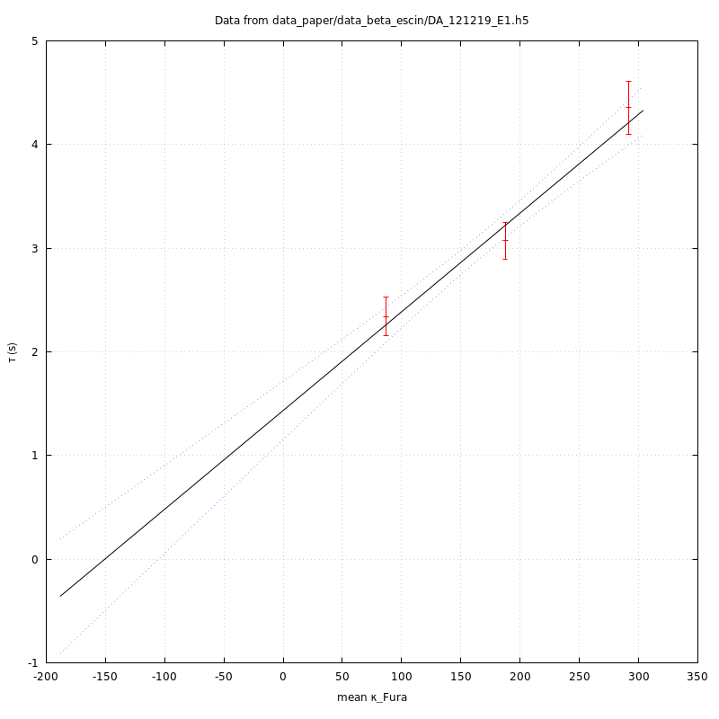

The C programs and their use
Table of Contents
- 1. Introduction
- 2. Definitions of structures and associated functions holding data
- 2.1.
ADUdata - 2.2.
DATAGroup mapping inCcode - 2.3.
DYE - 2.4.
ILLUMINATION - 2.5.
CCD - 2.6. Keeping everything in one structure
- 2.7. Getting [Fura] estimates
- 2.1.
- 3. Working the ratiometric estimator
- 3.1. Some analytical details
- 3.2. Goodness of fit functions definitions
- 3.3.
ratiostructure and related functions- 3.3.1.
Ccode related toratiostructures- 3.3.1.1.
ratiotype definition - 3.3.1.2.
ratio_allocdefinition - 3.3.1.3.
ratio_freedefinition - 3.3.1.4.
ratio_get_setmacro definitions - 3.3.1.5.
ratio_fprintfdefinition - 3.3.1.6.
ratio_est - 3.3.1.7.
ratio_find_fit_start - 3.3.1.8.
mono_exp_fit_res - 3.3.1.9.
mono_exp_fit_res_fprintf - 3.3.1.10.
ratio_for_fit - 3.3.1.11.
ratio_residuals - 3.3.1.12.
ratio_fit_callback - 3.3.1.13.
ratio_fit - 3.3.1.14.
ratio_test - 3.3.1.15.
ratio_testcompilation and run
- 3.3.1.1.
- 3.3.2.
ratioheader and source
- 3.3.1.
- 4. Building the
abaalibrary - 5. Our first "user's" program:
fit_ratiometric - 6. Getting Fura concentration during a stimulation:
fura_concentration - 7. Getting the time constant as a function of \(\kappa_{F}\)
- 8. A program doing all that at once
- 8.1. The
aba_ratioprogram- 8.1.1.
aba_ratiocode- 8.1.1.1.
aba_ratioskeleton - 8.1.1.2.
<<aba_ratio-usage>> - 8.1.1.3.
<<aba_ratio-args>> - 8.1.1.4.
<<aba_ratio-read-data>> - 8.1.1.5.
<<aba_ratio-get-loading-curve>> - 8.1.1.6.
<<aba_ratio_loading_curve_g_script>> - 8.1.1.7.
<<aba_ratio_ratiometric_estimator>> - 8.1.1.8.
<<aba_ratio_mono_exp_fit>> - 8.1.1.9.
<<aba_ratio_mono_exp_g_script>> - 8.1.1.10.
<<aba_ratio_kappa_Fura>> - 8.1.1.11.
<<aba_ratio_tau_vs_kappa>> - 8.1.1.12.
<<aba_ratio_tau_vs_kappa_g_script>> - 8.1.1.13.
<<wls_fit>> - 8.1.1.14.
<<robust_fit>> - 8.1.1.15.
aba_ratiocompilation
- 8.1.1.1.
- 8.1.1.
- 8.2. Using
aba_ratio
- 8.1. The
1 Introduction
We define in this document the C codes / programs developped for the analysis of the "\(\beta\) ecsin" data with the added buffer approach. Examples of use are also included.
1.1 Why C, gnuplot and the shell?
This document is the exploration of an idea: use the shell (bash or zsh) instead of the Python or R command line for interactive analysis and write the short functions performing the actual analysis in C. The motivation for this exploration comes from two books by Ben Klemens: Modeling With Data and 21st Century C. The main advantages of C compared to the other two languages are:
- Its stability (the programs written here are very likely to run unchanged in 20 years from now; what can be sure that this won't be true with
Python). - The development tools that come with it are just spectacular (see the very short and very clear book of Brian Gough An Introduction to GCC to understand what I mean by that).
1.2 Required software and libraries
Since a Bash or a Z shell are going to be used, Windows users will have to install Cygwin, Linux and MacOS users should have the bash shell by default and the zsh shell readily available from their package manager. To dig deeper into the amazing possibilities (and spectacular editorial support) of these tools, check From Bash to Z Shell. Conquering the Command Line by Kiddle, Peek and Stephenson.
The no-shell codes are going to be written in C, meaning that a C compiler together with the "classical" development tools (make, etc) are required. I'm going to use gcc here.
The heavy computational work is going to be performed mainly by the gsl (the GNU Scientific Library) that is easily installed through your package manager (from now one, for windows users, the "package manager" refers to the one of Cygwin). The graphs are be generated with gnuplot; for a quick tutorial check http://physicspmb.ukzn.ac.za/index.php/Gnuplot_tutorial, for an easy to navigate set of (sophisticated) recipes check http://www.gnuplotting.org/. The data sets are in HDF5 format and the C library, as well as the command line tools, developed by the HDF5 group are going to be heavily used here.
1.3 A remark on the code presentation
The literate programming approach is used here. This means that the code is broken into "manageable" pieces that are individually explained (when just reading the code is not enough), they are then pasted together to give the code that will actually get compiled. These manageable pieces are called blocks and each block gets a name like: <<name-of-the-block>> upon definition. It is then referred to by this name when used in subsequent codes. See Schulte, Davison, Dye and Dominik (2010) A Multi-Language Computing Environment for Literate Programming and Reproducible Research for further explanations. The code blocks also include documentation in Doxygen format and we try to avoid writing twice the same thing, in the text and in the documentation. So if something is "missing" from the text description, please check the documentation within the block first to see if what you're looking for is there.
2 Definitions of structures and associated functions holding data
2.1 ADU data
2.1.1 Data layout in the HDF5 files
Our data stored in HDF5 format contain the actual ADU recordings in Groups called DATA. Each of those groups contains three datasets:
ADU- an array of integers with 7 columns and as many rows as there were measurements. The first column is the
time_indexcolumn, the second contains theADU340measurements (measurements at 340 nm in the ROI), then comes theADU340Bmeasurements (measurements at 340 nm in the ROB), theADU360measurements (at 360 nm in the ROI), theADU360Bmeasurements (at 360 nm in the ROB), theADU380measurements (at 380 nm in the ROI), theADU380Bmeasurements (at 380 nm in the ROB). TIME_DELTA- a scalar (see below).
TIME_OFFSET- a scalar (see below).
To get the real time of each measurement, multiply the first column of ADU by TIME_DELTA and add TIME_OFFSET. The other columns of the ADU matrix contain the "raw" readings of the P of P_B pixels from the CCD chip.
2.1.2 Data layout in the C code
We will store these data in double format in a new type of structure called adu. Each of the seven column will become a single pointer to a gsl_vector. We define this structure in a specific code block in the next section.
2.1.2.1 adu type definition
/** @brief Structure holding arrays of gsl_vectors each vector contains
* ADU measurements from at a specific wavelength from a
* specific loaction (ROI or ROB).
*/
typedef struct
{
gsl_vector * ADU340; //!< measurements at 340 nm from ROI
gsl_vector * ADU340B; //!< measurements at 340 nm from ROB
gsl_vector * ADU360; //!< measurements at 360 nm from ROI
gsl_vector * ADU360B; //!< measurements at 360 nm from ROB
gsl_vector * ADU380; //!< measurements at 380 nm from ROI
gsl_vector * ADU380B; //!< measurements at 380 nm from ROB
gsl_vector * TIME; //!< time (in s) of measurements
} adu;
2.1.2.2 adu_alloc definition
It will be helpful to have an alloc function for adu structures:
/** @brief Allocates an [adu](@ref adu)
*
* The function allocates memory for an [adu](@ref adu) structure
*
* @param[in] n_obs the number of measurements / obserations
* @returns a pointer to an allocated [adu](@ref adu)
*/
adu * adu_alloc(size_t n_obs) {
adu * res = malloc(sizeof(adu));
res->ADU340 = gsl_vector_alloc(n_obs);
res->ADU340B = gsl_vector_alloc(n_obs);
res->ADU360 = gsl_vector_alloc(n_obs);
res->ADU360B = gsl_vector_alloc(n_obs);
res->ADU380 = gsl_vector_alloc(n_obs);
res->ADU380B = gsl_vector_alloc(n_obs);
res->TIME = gsl_vector_alloc(n_obs);
return res;
}
2.1.2.3 adu_free definition
It will also be helpful to have a free function for adu structures:
/** @brief Frees an [adu](@ref adu)
@param[in,out] adu_ptr a pointer to an allocated [adu](@ref adu) structure
@returns 0 if everything goes fine
*/
int adu_free(adu * adu_ptr) {
gsl_vector_free(adu_ptr->ADU340);
gsl_vector_free(adu_ptr->ADU340B);
gsl_vector_free(adu_ptr->ADU360);
gsl_vector_free(adu_ptr->ADU360B);
gsl_vector_free(adu_ptr->ADU380);
gsl_vector_free(adu_ptr->ADU380B);
gsl_vector_free(adu_ptr->TIME);
free(adu_ptr);
return 0;
}
2.1.2.4 adu_get_set macro definitions
We define next macros with arguments giving an easy way to get and set values of specific members of adu structure:
/** @def adu_get(adu,member,i) * @brief A macro that returns value at index \a i of * member \a member from \a adu structure */ #define adu_get(adu,member,i) gsl_vector_get(adu->member,i) /** @def adu_set(adu,member,i,x) * @brief A macro that sets value at index \a i of * member \a member from \a adu structure at \a x */ #define adu_set(adu,member,i,x) gsl_vector_set(adu->member,i,x)
2.1.2.5 adu_printf definition
We now define a function that prints to the stdout the content of an adu structure:
/** @brief Prints [adu](@ref adu) content to stdout
@param[in] padu a pointer to an [adu](@ref adu) structure
@return 0 if everything goes fine
*/
int adu_printf(adu * padu) {
size_t nobs=(padu)->TIME->size;
printf("# Time ADU340 ADU340B ADU360 ADU360B ADU380 ADU380B\n");
for (size_t i=0; i<nobs; i++) {
printf("%9.9g %8d %8d %8d %8d %8d %8d\n",
adu_get((padu),TIME,i),
(int) adu_get(padu,ADU340,i),
(int) adu_get(padu,ADU340B,i),
(int) adu_get(padu,ADU360,i),
(int) adu_get(padu,ADU360B,i),
(int) adu_get(padu,ADU380,i),
(int) adu_get(padu,ADU380B,i));
}
printf("\n\n");
return 0;
}
2.1.2.6 adu_test program definition
We now define a short program adu_test allowing us to test the functions we just defined. We store this program is a sub-directory called code.
/** @file adu_test.c
* @brief Test program for adu structure and related
* functions.
*/
#include <stdio.h>
#include <stdlib.h>
#include <string.h>
#include <gsl/gsl_vector.h>
<<adu-type-definition>>
<<adu_alloc>>
<<adu_free>>
<<adu_get_set>>
<<adu_printf>>
int main()
{
// Allocate an adu with 2 observations
adu * adu_ptr = adu_alloc(2);
printf("Allocated adu_ptr with two elements.\n");
printf("Setting values of ADU340 field.\n");
adu_set(adu_ptr,ADU340,0,1.0);
adu_set(adu_ptr,ADU340,1,2.0);
printf("Setting values of ADU340B field.\n");
adu_set(adu_ptr,ADU340B,0,3.0);
adu_set(adu_ptr,ADU340B,1,4.0);
printf("Setting values of ADU360 field.\n");
adu_set(adu_ptr,ADU360,0,5.0);
adu_set(adu_ptr,ADU360,1,6.0);
printf("Setting values of ADU360B field.\n");
adu_set(adu_ptr,ADU360B,0,7.0);
adu_set(adu_ptr,ADU360B,1,8.0);
printf("Setting values of ADU380 field.\n");
adu_set(adu_ptr,ADU380,0,9.0);
adu_set(adu_ptr,ADU380,1,10.0);
printf("Setting values of ADU380B field.\n");
adu_set(adu_ptr,ADU380B,0,11.0);
adu_set(adu_ptr,ADU380B,1,12.0);
printf("Setting values of TIME field.\n");
adu_set(adu_ptr,TIME,0,1.5);
adu_set(adu_ptr,TIME,1,2.5);
printf("The content of the structure is.\n");
adu_printf(adu_ptr);
// free allocated adu
adu_free(adu_ptr);
printf("Freed adu_ptr. Don't forget running valgrind!\n");
return 0;
}
2.1.2.7 adu_test compilation, run, etc
We compile the code with:
gcc -Wall -g -o code/adu_test code/adu_test.c -lgsl -lgslcblas -lm -std=gnu11
We run it with:
./code/adu_test
Allocated adu_ptr with two elements.
Setting values of ADU340 field.
Setting values of ADU340B field.
Setting values of ADU360 field.
Setting values of ADU360B field.
Setting values of ADU380 field.
Setting values of ADU380B field.
Setting values of TIME field.
The content of the structure is.
# Time ADU340 ADU340B ADU360 ADU360B ADU380 ADU380B
1.5 1 3 5 7 9 11
2.5 2 4 6 8 10 12
Freed adu_ptr. Don't forget running valgrind!
We run it with Valgrind to make sure that all the allocated memory has been freed upon program termination:
valgrind ./code/adu_test
==14941== Memcheck, a memory error detector
==14941== Copyright (C) 2002-2017, and GNU GPL'd, by Julian Seward et al.
==14941== Using Valgrind-3.14.0 and LibVEX; rerun with -h for copyright info
==14941== Command: ./code/adu_test
==14941==
Allocated adu_ptr with two elements.
Setting values of ADU340 field.
Setting values of ADU340B field.
Setting values of ADU360 field.
Setting values of ADU360B field.
Setting values of ADU380 field.
Setting values of ADU380B field.
Setting values of TIME field.
The content of the structure is.
# Time ADU340 ADU340B ADU360 ADU360B ADU380 ADU380B
1.5 1 3 5 7 9 11
2.5 2 4 6 8 10 12
Freed adu_ptr. Don't forget running valgrind!
==14941==
==14941== HEAP SUMMARY:
==14941== in use at exit: 0 bytes in 0 blocks
==14941== total heap usage: 23 allocs, 23 frees, 4,656 bytes allocated
==14941==
==14941== All heap blocks were freed -- no leaks are possible
==14941==
==14941== For counts of detected and suppressed errors, rerun with: -v
==14941== ERROR SUMMARY: 0 errors from 0 contexts (suppressed: 0 from 0)
We are happy!
2.1.3 adu header and source
We define two code blocks for later use when we will define a library. Code block <<adu.h>> contains the types, macros and function prototypes we just defined.
<<adu-type-definition>> adu * adu_alloc(size_t n_obs); int adu_free(adu * adu_ptr); <<adu_get_set>> int adu_printf(adu * padu);
Code block <<adu.c>> contains the function definitions per se and gets stored in file code/adu.c:
/** \file adu.c
\brief Definitions of functions related to [adu](@ref adu) structures
*/
#include "abaa.h"
<<adu_alloc>>
<<adu_free>>
<<adu_printf>>
2.2 DATA Group mapping in C code
2.2.1 adu_vector: an array of adu structures
We will create a data type called adu_vector holding an array whose successive elements will be adu structures. Element 0 of our array will contain the load dataset and the following elements will contain the stim1, stim2, etc. datasets.
2.2.1.1 adu_vector type definition
/** @brief Structure holding arrays of `adu` structures .
*/
typedef struct
{
size_t nelt; //!< number of elements in the vector
adu ** adu_v; //!< array of pointers to adu structures
} adu_vector;
2.2.1.2 adu_vector_alloc definition
It will be helpful to have an alloc function for adu_vector structures:
/** @brief Allocates an adu_vector
*
* The function allocates memory for an adu_vector structure
*
* @param[in] nelt the number of stimulation
* @returns a pointer to an allocated adu_vector
*/
adu_vector * adu_vector_alloc(size_t nelt) {
adu_vector * res = malloc(sizeof(adu_vector));
res->nelt = nelt;
res->adu_v = malloc(nelt*sizeof(adu));
return res;
}
2.2.1.3 adu_vector_free definition
It will also be helpful to have a free function for adu_vector structures:
/** @brief Frees an adu_vector
*
* @param[in,out] adu_vector_ptr a pointer to an allocated adu_vector structure
* @returns 0 if everything goes fine
*/
int adu_vector_free(adu_vector * adu_vector_ptr) {
for (size_t d_idx=0; d_idx<adu_vector_ptr->nelt; d_idx++)
adu_free(adu_vector_ptr->adu_v[d_idx]);
free(adu_vector_ptr->adu_v);
free(adu_vector_ptr);
return 0;
}
2.2.1.4 adu_vector_printf definition
We now define a function that prints to the stdout the content of an adu_vector structure:
/** @brief Prints adu_vector content to stdout
*
* @param[in] padu_vector a pointer to an adu_vector structure
* @return 0 if everything goes fine
*/
int adu_vector_printf(adu_vector * padu_vector) {
for (size_t d_idx=0; d_idx<padu_vector->nelt; d_idx++) {
size_t nobs=(padu_vector->adu_v[d_idx])->TIME->size;
if (d_idx == 0) {
printf("# Loading curve with %d elements\n", (int) nobs);
} else {
printf("# Stim %d with %d elements\n", (int) d_idx, (int) nobs);
}
adu_printf(padu_vector->adu_v[d_idx]);
}
return 0;
}
2.2.1.5 data_get_nelt
/** @brief Returns number of DataSets in Group DATA
*
* The number returned equal 1 plus the number of stim
*
* @param[in] file_id an HFD5 file identifier
* @return a size_t, the number of DataSets
*/
size_t data_get_nelt(hid_t file_id) {
char dset[] = "/DATA";
hid_t gid = H5Gopen(file_id,dset,H5P_DEFAULT);
// Get info on group DATA
H5G_info_t group_info;
H5Gget_info(gid, &group_info);
size_t n_elt = (size_t) group_info.nlinks;
// Close Group
H5Gclose(gid);
return n_elt;
}
2.2.1.6 adu_vector_read_from_file
/** @brief Allocates and initializes an `adu_vector` structure
* read from Group DATA in a file
*
* @param[in] file_id HDF5 file identifier
* @return an allocated and initialized pointer to an adu_vector structure
*/
adu_vector * adu_vector_read_from_file(hid_t file_id) {
char *dsets[] = {"/DATA/load","/DATA/stim1","/DATA/stim2",
"/DATA/stim3","/DATA/stim4","/DATA/stim5",
"/DATA/stim6","/DATA/stim7","/DATA/stim8"};
char STIM[256],DELTA[256],OFFSET[256];
size_t n_elt = data_get_nelt(file_id);
if (n_elt > 9) {
fprintf(stderr,"Too many data sets (>9).\n");
return NULL;
}
adu_vector * data = adu_vector_alloc(n_elt);
for (size_t d_idx=0; d_idx<n_elt; d_idx++) {
STIM[0] = '\0';
strcat(STIM,dsets[d_idx]);
strcat(STIM,"/ADU");
// load DataSet
hsize_t dims[2];
H5LTget_dataset_info(file_id,STIM,dims,NULL,NULL);
size_t nobs = (size_t) dims[0];
size_t ncol = (size_t) dims[1];
int *ADU = malloc(nobs*ncol*sizeof(int));
H5LTread_dataset_int(file_id,STIM,ADU);
DELTA[0] = '\0';
strcat(DELTA,dsets[d_idx]);
strcat(DELTA,"/TIME_DELTA");
double delta;
H5LTread_dataset_double(file_id,DELTA,&delta);
OFFSET[0] = '\0';
strcat(OFFSET,dsets[d_idx]);
strcat(OFFSET,"/TIME_OFFSET");
double offset;
H5LTread_dataset_double(file_id,OFFSET,&offset);
data->adu_v[d_idx] = adu_alloc(nobs);
for (size_t i=0; i<nobs; i++) {
adu_set((data->adu_v[d_idx]),TIME,i,offset+delta*((double) ADU[i*ncol]));
adu_set((data->adu_v[d_idx]),ADU340,i,(double) ADU[i*ncol + 1]);
adu_set((data->adu_v[d_idx]),ADU340B,i,(double) ADU[i*ncol + 2]);
adu_set((data->adu_v[d_idx]),ADU360,i,(double) ADU[i*ncol + 3]);
adu_set((data->adu_v[d_idx]),ADU360B,i,(double) ADU[i*ncol + 4]);
adu_set((data->adu_v[d_idx]),ADU380,i,(double) ADU[i*ncol + 5]);
adu_set((data->adu_v[d_idx]),ADU380B,i,(double) ADU[i*ncol + 6]);
}
free(ADU);
}
return data;
}
2.2.1.7 adu_vector_test program definition
The only "difficulty" in that code is the part that deals with opening / closing HDF5 files and Groups (within) those files.
/** @file adu_vector_test.c
* @brief test functions reading ADU data from an HDF5 file
* and printing them to the stdout
*/
#include <stdio.h>
#include <stdlib.h>
#include <string.h>
#include <hdf5.h>
#include <hdf5_hl.h>
#include <gsl/gsl_vector.h>
<<adu-type-definition>>
<<adu_alloc>>
<<adu_free>>
<<adu_get_set>>
<<adu_vector-type-definition>>
<<adu_vector_alloc>>
<<adu_vector_free>>
<<data_get_nelt>>
<<adu_vector_read_from_file>>
<<adu_printf>>
<<adu_vector_printf>>
#define FNAME "data_paper/data_beta_escin/DA_121219_E1.h5"
int main()
{
// Open FILE
char fname[] = FNAME;
hid_t fid = H5Fopen (fname, H5F_ACC_RDONLY, H5P_DEFAULT);
adu_vector * data = adu_vector_read_from_file(fid);
// Close file
H5Fclose (fid);
if (data == NULL) return -1;
adu_vector_printf(data);
adu_vector_free(data);
return 0;
}
2.2.1.8 adu_vector_test compilation, run, etc
We compile the code with:
gcc -Wall -g -o code/adu_vector_test code/adu_vector_test.c -lgsl -lgslcblas -lhdf5 -lhdf5_hl -lm -std=gnu11
We test and "valgrind" it with:
valgrind ./code/adu_vector_test > toto
==14949== Memcheck, a memory error detector ==14949== Copyright (C) 2002-2017, and GNU GPL'd, by Julian Seward et al. ==14949== Using Valgrind-3.14.0 and LibVEX; rerun with -h for copyright info ==14949== Command: ./code/adu_vector_test ==14949== ==14949== ==14949== HEAP SUMMARY: ==14949== in use at exit: 0 bytes in 0 blocks ==14949== total heap usage: 3,964 allocs, 3,964 frees, 1,666,868 bytes allocated ==14949== ==14949== All heap blocks were freed -- no leaks are possible ==14949== ==14949== For counts of detected and suppressed errors, rerun with: -v ==14949== ERROR SUMMARY: 0 errors from 0 contexts (suppressed: 0 from 0)
We can make a few figures using gnuplot.
unset key set grid set xlabel "Time (s)" set ylabel "ADU at 360 nm" plot 'toto' index 0 using 1:4 with points linecolor rgb "black" linewidth 2
2.2.2 adu_vector header and source
Again, we define two code blocks for later use with the library. First the "header" part <<adu_vector.h>>:
<<adu_vector-type-definition>> adu_vector * adu_vector_alloc(size_t nelt); int adu_vector_free(adu_vector * adu_vector_ptr); int adu_vector_printf(adu_vector * padu_vector); size_t data_get_nelt(hid_t file_id); adu_vector * adu_vector_read_from_file(hid_t file_id);
Next, the function definitions <<adu_vector.c>> stored in file code/adu_vector.c:
/** \file adu_vector.c
\brief Function definitions for [adu_vector](@ref adu_vector) structures
*/
#include "abaa.h"
<<adu_vector_alloc>>
<<adu_vector_free>>
<<data_get_nelt>>
<<adu_vector_read_from_file>>
<<adu_vector_printf>>
2.3 DYE
2.3.1 DYE parameters in the HDF5 files
The DYE group contains the following scalar datasets resulting from independent calibration experiments:
R_min_hat- the estimated
R_minparameter. R_min_se- the estimated
R_minstandard error. R_max_hat- the estimated
R_maxparameter. R_max_se- the estimated
R_maxstandard error. K_eff_hat- the estimated
K_effparameter in \(\mu{}M\). K_eff_se- the estimated
K_effstandard error in \(\mu{}M\). K_d_hat- the estimated
K_dparameter in \(\mu{}M\). K_d_se- the estimated
K_dstandard error in \(\mu{}M\). pipette_concentration- the dye concentration in the pipette in \(\mu{}M\).
2.3.2 DYE parameters layout in C code
We create a structure with that looks exactly like the corresponding HDF5 group.
2.3.2.1 dye type definition
/** @brief Structure holding dye parameters.
*/
typedef struct
{
double R_min_hat; //!< estimated `R_min` parameter
double R_min_se; //!< estimated `R_min` standard error
double R_max_hat; //!< estimated `R_max` parameter
double R_max_se; //!< estimated `R_max` standard error
double K_eff_hat; //!< estimated `K_eff` parameter in \f$\mu{}M\f$
double K_eff_se; //!< estimated `K_eff` standard error in \f$\mu{}M\f$
double K_d_hat; //!< estimated `K_d` parameter in \f$\mu{}M\f$
double K_d_se; //!< estimated `K_d` standard error in \f$\mu{}M\f$
double pipette_concentration;//!< dye concentration in the pipette in \f$\mu{}M\f$
} dye;
2.3.2.2 <<dye_read_from_file>>
/** @brief Returns a `dye` structure
* read from Group DYE in a file
*
* @param[in] file_id HDF5 file identifier
* @return a `dye` structure
*/
dye dye_read_from_file(hid_t file_id) {
dye res;
H5LTread_dataset_double(file_id,"/DYE/R_min_hat",&res.R_min_hat);
H5LTread_dataset_double(file_id,"/DYE/R_min_se",&res.R_min_se);
H5LTread_dataset_double(file_id,"/DYE/R_max_hat",&res.R_max_hat);
H5LTread_dataset_double(file_id,"/DYE/R_max_se",&res.R_max_se);
H5LTread_dataset_double(file_id,"/DYE/K_eff_hat",&res.K_eff_hat);
H5LTread_dataset_double(file_id,"/DYE/K_eff_se",&res.K_eff_se);
H5LTread_dataset_double(file_id,"/DYE/K_d_hat",&res.K_d_hat);
H5LTread_dataset_double(file_id,"/DYE/K_d_se",&res.K_d_se);
H5LTread_dataset_double(file_id,"/DYE/pipette_concentration",&res.pipette_concentration);
return res;
}
2.3.2.3 <<dye_printf>>
/** @brief Prints dye structure content to stdout
*
* @param[in] pdye a pointer to a `dye` structure
* @return 0 if everything goes fine
*/
int dye_printf(dye * pdye) {
printf("# DYE parameters\n");
printf("# R_min_hat: %g\n",pdye->R_min_hat);
printf("# R_min_se: %g\n",pdye->R_min_se);
printf("# R_max_hat: %g\n",pdye->R_max_hat);
printf("# R_max_se: %g\n",pdye->R_max_se);
printf("# K_eff_hat: %g\n",pdye->K_eff_hat);
printf("# K_eff_se: %g\n",pdye->K_eff_se);
printf("# K_d_hat: %g\n",pdye->K_d_hat);
printf("# K_d_se: %g\n",pdye->K_d_se);
printf("# pipette_concentration: %g\n\n",pdye->pipette_concentration);
return 0;
}
2.3.2.4 dye_test
We now write a short program, dye_test.c, testing our new functions:
/** @file dye_test.c
* @brief test functions reading DYE data from an HDF5 file
* and printing them to the stdout
*/
#include <stdio.h>
#include <stdlib.h>
#include <string.h>
#include <hdf5.h>
#include <hdf5_hl.h>
#include <gsl/gsl_vector.h>
<<dye-type-definition>>
<<dye_read_from_file>>
<<dye_printf>>
#define FNAME "data_paper/data_beta_escin/DA_121219_E1.h5"
int main()
{
// Open FILE
char fname[] = FNAME;
hid_t fid = H5Fopen (fname, H5F_ACC_RDONLY, H5P_DEFAULT);
dye dye_st = dye_read_from_file(fid);
// Close file
H5Fclose (fid);
dye_printf(&dye_st);
return 0;
}
2.3.2.5 dye_test compilation, run, etc
We compile the code with:
gcc -Wall -g -o code/dye_test code/dye_test.c -lhdf5 -lhdf5_hl -lm -std=gnu11
We now run it with valgrind:
valgrind ./code/dye_test
==14957== Memcheck, a memory error detector ==14957== Copyright (C) 2002-2017, and GNU GPL'd, by Julian Seward et al. ==14957== Using Valgrind-3.14.0 and LibVEX; rerun with -h for copyright info ==14957== Command: ./code/dye_test ==14957== # DYE parameters # R_min_hat: 0.147143 # R_min_se: 0.00623826 # R_max_hat: 1.59923 # R_max_se: 0.0711322 # K_eff_hat: 1.09304 # K_eff_se: 0.362558 # K_d_hat: 0.225167 # K_d_se: 0.0114915 # pipette_concentration: 200 ==14957== ==14957== HEAP SUMMARY: ==14957== in use at exit: 0 bytes in 0 blocks ==14957== total heap usage: 3,497 allocs, 3,497 frees, 1,233,749 bytes allocated ==14957== ==14957== All heap blocks were freed -- no leaks are possible ==14957== ==14957== For counts of detected and suppressed errors, rerun with: -v ==14957== ERROR SUMMARY: 0 errors from 0 contexts (suppressed: 0 from 0)
2.3.3 dye header and source
For later use, the "header part", <<dye.h>>:
<<dye-type-definition>> dye dye_read_from_file(hid_t file_id); int dye_printf(dye * pdye);
The function definitions <<dye.c>> stored in file code/dye.c:
/** \file dye.c
\brief Function definitions for [dye](@ref dye) structures
*/
#include "abaa.h"
<<dye_read_from_file>>
<<dye_printf>>
2.4 ILLUMINATION
2.4.1 ILLUMINATION parameters in the HDF5 files
The ILLUMINATION group contains the following scalar datasets:
T_340- illumination duration at 340 nm in seconds.
T_360- illumination duration at 360 nm in seconds.
T_380- illumination duration at 380 nm in seconds.
2.4.2 ILLUMINATION parameters layout in C code
We create a structure with that looks exactly like the corresponding HDF5 group.
2.4.2.1 illumination type definition
/** @brief Structure holding illumination parameters.
*/
typedef struct
{
double T_340; //!< illumination duration at 340 nm (s)
double T_360; //!< illumination duration at 360 nm (s)
double T_380; //!< illumination duration at 380 nm (s)
} illumination;
2.4.2.2 <<illumination_read_from_file>>
/** @brief Returns a `illumination` structure
* read from Group ILLUMINATION in a file
*
* @param[in] file_id HDF5 file identifier
* @return a `illumination` structure
*/
illumination illumination_read_from_file(hid_t file_id) {
illumination res;
H5LTread_dataset_double(file_id,"/ILLUMINATION/T_340",&res.T_340);
H5LTread_dataset_double(file_id,"/ILLUMINATION/T_360",&res.T_360);
H5LTread_dataset_double(file_id,"/ILLUMINATION/T_380",&res.T_380);
return res;
}
2.4.2.3 <<illumination_printf>>
/** @brief Prints illumination structure content to stdout
*
* @param[in] pillumination a pointer to a `illumination` structure
* @return 0 if everything goes fine
*/
int illumination_printf(illumination * pillumination) {
printf("# ILLUMINATION parameters\n");
printf("# T_340: %g\n",pillumination->T_340);
printf("# T_360: %g\n",pillumination->T_360);
printf("# T_380: %g\n\n",pillumination->T_380);
return 0;
}
2.4.2.4 illumination_test
We now write a short program, illumination_test.c, testing our new functions:
/** @file illumination_test.c
* @brief test functions reading ILLUMINATION data from an HDF5 file
* and printing them to the stdout
*/
#include <stdio.h>
#include <stdlib.h>
#include <string.h>
#include <hdf5.h>
#include <hdf5_hl.h>
#include <gsl/gsl_vector.h>
<<illumination-type-definition>>
<<illumination_read_from_file>>
<<illumination_printf>>
#define FNAME "data_paper/data_beta_escin/DA_121219_E1.h5"
int main()
{
// Open FILE
char fname[] = FNAME;
hid_t fid = H5Fopen (fname, H5F_ACC_RDONLY, H5P_DEFAULT);
illumination illumination_st = illumination_read_from_file(fid);
// Close file
H5Fclose (fid);
illumination_printf(&illumination_st);
return 0;
}
2.4.2.5 illumination_test compilation, run, etc
We compile the code with:
gcc -Wall -g -o code/illumination_test code/illumination_test.c -lhdf5 -lhdf5_hl -lm -std=gnu11
We now run it with valgrind:
valgrind ./code/illumination_test
==14967== Memcheck, a memory error detector ==14967== Copyright (C) 2002-2017, and GNU GPL'd, by Julian Seward et al. ==14967== Using Valgrind-3.14.0 and LibVEX; rerun with -h for copyright info ==14967== Command: ./code/illumination_test ==14967== # ILLUMINATION parameters # T_340: 0.01 # T_360: 0.003 # T_380: 0.003 ==14967== ==14967== HEAP SUMMARY: ==14967== in use at exit: 0 bytes in 0 blocks ==14967== total heap usage: 3,199 allocs, 3,199 frees, 964,286 bytes allocated ==14967== ==14967== All heap blocks were freed -- no leaks are possible ==14967== ==14967== For counts of detected and suppressed errors, rerun with: -v ==14967== ERROR SUMMARY: 0 errors from 0 contexts (suppressed: 0 from 0)
2.4.3 illumination header and source
The header part in code block <<illumination.h>>:
<<illumination-type-definition>> illumination illumination_read_from_file(hid_t file_id); int illumination_printf(illumination * pillumination);
The function definitions <<illumination.c>> stored in file code/illumination.c:
/** \file illumination.c
\brief Function definitions for [illumination](@ref illumination) structures.
*/
#include "abaa.h"
<<illumination_read_from_file>>
<<illumination_printf>>
2.5 CCD
2.5.1 CCD parameters in the HDF5 files
The CCD group contains the following scalar datasets:
GAIN- the CCD chip gain (from calibration experiments).
S_RO- the read-out standard deviation of the CCD chip (from calibration experiments).
P- the number of pixels in the
Region Of Interest(ROI); the read-out variance should be added as many times as there are pixels when one computes the measurements variance. P_B- the number of pixels in the "background"
Region Of Interest(ROB).
2.5.2 CCD parameters layout in C code
We create a structure with that looks exactly like the corresponding HDF5 group.
2.5.2.1 ccd type definition
We store the read-out variance and not the read-out standard deviation.
/** @brief Structure holding ccd parameters.
*/
typedef struct
{
double gain; //!< CCD chip gain
double s2; //!< CCD chip read-out variance
size_t P; //!< number of pixels in ROI
size_t P_B; //!< number of pixels in ROB
} ccd;
2.5.2.2 <<ccd_read_from_file>>
/** @brief Returns a `ccd` structure
* read from Group CCD in a file
*
* @param[in] file_id HDF5 file identifier
* @return a `ccd` structure
*/
ccd ccd_read_from_file(hid_t file_id) {
ccd res;
H5LTread_dataset_double(file_id,"/CCD/GAIN",&res.gain);
double value;
H5LTread_dataset_double(file_id,"/CCD/S_RO",&value);
res.s2 = value*value;
int n;
H5LTread_dataset_int(file_id,"/CCD/P",&n);
res.P = (size_t) n;
H5LTread_dataset_int(file_id,"/CCD/P_B",&n);
res.P_B = (size_t) n;
return res;
}
2.5.2.3 <<ccd_printf>>
/** @brief Prints `ccd` structure content to stdout
*
* @param[in] pccd a pointer to a `ccd` structure
* @return 0 if everything goes fine
*/
int ccd_printf(ccd * pccd) {
printf("# CCD parameters\n");
printf("# Gain: %g\n",pccd->gain);
printf("# Read-out variance: %g\n",pccd->s2);
printf("# P: %d\n", (int) pccd->P);
printf("# P_B: %d\n\n", (int) pccd->P_B);
return 0;
}
2.5.2.4 ccd_test
We now write a short program, ccd_test.c, testing our new functions:
/** @file ccd_test.c
* @brief test functions reading CCD data from an HDF5 file
* and printing them to the stdout
*/
#include <stdio.h>
#include <stdlib.h>
#include <string.h>
#include <hdf5.h>
#include <hdf5_hl.h>
#include <gsl/gsl_vector.h>
<<ccd-type-definition>>
<<ccd_read_from_file>>
<<ccd_printf>>
#define FNAME "data_paper/data_beta_escin/DA_121219_E1.h5"
int main()
{
// Open FILE
char fname[] = FNAME;
hid_t fid = H5Fopen (fname, H5F_ACC_RDONLY, H5P_DEFAULT);
ccd ccd_st = ccd_read_from_file(fid);
// Close file
H5Fclose (fid);
ccd_printf(&ccd_st);
return 0;
}
2.5.2.5 ccd_test compilation, run, etc
We compile the code with:
gcc -Wall -g -o code/ccd_test code/ccd_test.c -lhdf5 -lhdf5_hl -lm -std=gnu11
We now run it with valgrind:
valgrind ./code/ccd_test
==14975== Memcheck, a memory error detector ==14975== Copyright (C) 2002-2017, and GNU GPL'd, by Julian Seward et al. ==14975== Using Valgrind-3.14.0 and LibVEX; rerun with -h for copyright info ==14975== Command: ./code/ccd_test ==14975== # CCD parameters # Gain: 0.146 # Read-out variance: 268.96 # P: 3 # P_B: 448 ==14975== ==14975== HEAP SUMMARY: ==14975== in use at exit: 0 bytes in 0 blocks ==14975== total heap usage: 3,251 allocs, 3,251 frees, 1,008,863 bytes allocated ==14975== ==14975== All heap blocks were freed -- no leaks are possible ==14975== ==14975== For counts of detected and suppressed errors, rerun with: -v ==14975== ERROR SUMMARY: 0 errors from 0 contexts (suppressed: 0 from 0)
2.5.3 ccd header and source
The header part in code block <<ccd.h>>:
<<ccd-type-definition>> ccd ccd_read_from_file(hid_t file_id); int ccd_printf(ccd * pccd);
The function definitions <<ccd.c>> stored in file code/ccd.c:
/** \file ccd.c
\brif Function definitions for [ccd](@ref ccd) structures.
*/
#include "abaa.h"
<<ccd_read_from_file>>
<<ccd_printf>>
2.6 Keeping everything in one structure
We now define a new structure that holds everything.
2.6.1 aba an added buffer approach structure:
2.6.1.1 aba type definition
/** \brief Structure holding all the data
*/
typedef struct
{
adu_vector * data; //!< a pointer to an adu_vector
dye dye; //!< dye parameters
illumination light; //!< illumination parameters
ccd ccd; //!< ccd chip parameters
} aba;
2.6.1.2 aba_alloc
/** \brief Allocates an [aba](@ref aba) structure
The function allocates memory for an [aba](@ref aba) structure
@returns a pointer to an allocated [aba](@ref aba)
*/
aba * aba_alloc()
{
aba * res = malloc(sizeof(aba));
return res;
}
2.6.1.3 aba_free
/** @brief Frees an [aba](@ref aba)
@param[in,out] aba_ptr a pointer to an allocated [aba](@ref aba) structure
@returns 0 if everything goes fine
*/
int aba_free(aba * paba)
{
adu_vector_free(paba->data);
free(paba);
return 0;
}
2.6.1.4 aba_read_from_file
/** \brief Reads the content of an opened HDF5 file
and stores the result in an [aba](@ref aba)
\param[in] file_id pointer to an opened HDF5 file
\return a pointer to an allocated and intialized [aba](@ref aba)
*/
aba * aba_read_from_file(hid_t file_id)
{
aba * res = aba_alloc();
res->data = adu_vector_read_from_file(file_id);
res->dye = dye_read_from_file(file_id);
res->light = illumination_read_from_file(file_id);
res->ccd = ccd_read_from_file(file_id);
return res;
}
2.6.1.5 aba_printf
/** @brief Prints [aba](@ref aba) content to stdout
@param[in] paba a pointer to an [aba](@ref aba) structure
@return 0 if everything goes fine
*/
int aba_printf(aba * paba)
{
dye_printf(&(paba->dye));
ccd_printf(&(paba->ccd));
illumination_printf(&(paba->light));
adu_vector_printf(paba->data);
return 0;
}
2.6.1.6 aba_test program definition
We now write a short program, aba_test.c, testing our new functions:
/** @file aba_test.c
* @brief test functions reading data from an HDF5 file
* and printing them to the stdout
*/
#include <stdio.h>
#include <stdlib.h>
#include <string.h>
#include <hdf5.h>
#include <hdf5_hl.h>
#include <gsl/gsl_vector.h>
<<adu-type-definition>>
<<adu_alloc>>
<<adu_free>>
<<adu_get_set>>
<<adu_vector-type-definition>>
<<adu_vector_alloc>>
<<adu_vector_free>>
<<data_get_nelt>>
<<adu_vector_read_from_file>>
<<adu_printf>>
<<adu_vector_printf>>
<<dye-type-definition>>
<<dye_read_from_file>>
<<dye_printf>>
<<illumination-type-definition>>
<<illumination_read_from_file>>
<<illumination_printf>>
<<ccd-type-definition>>
<<ccd_read_from_file>>
<<ccd_printf>>
<<aba-type-definition>>
<<aba_alloc>>
<<aba_free>>
<<aba_read_from_file>>
<<aba_printf>>
#define FNAME "data_paper/data_beta_escin/DA_121219_E1.h5"
int main()
{
// Open FILE
char fname[] = FNAME;
hid_t fid = H5Fopen (fname, H5F_ACC_RDONLY, H5P_DEFAULT);
aba * paba = aba_read_from_file(fid);
// Close file
H5Fclose (fid);
aba_printf(paba);
aba_free(paba);
return 0;
}
2.6.1.7 aba_test compilation and run
We compile the code with:
gcc -Wall -g -o code/aba_test code/aba_test.c -lgsl -lgslcblas -lhdf5 -lhdf5_hl -lm -std=gnu11
We run it with valgrind:
valgrind ./code/aba_test > toto
==14983== Memcheck, a memory error detector ==14983== Copyright (C) 2002-2017, and GNU GPL'd, by Julian Seward et al. ==14983== Using Valgrind-3.14.0 and LibVEX; rerun with -h for copyright info ==14983== Command: ./code/aba_test ==14983== ==14983== ==14983== HEAP SUMMARY: ==14983== in use at exit: 0 bytes in 0 blocks ==14983== total heap usage: 4,834 allocs, 4,834 frees, 2,402,637 bytes allocated ==14983== ==14983== All heap blocks were freed -- no leaks are possible ==14983== ==14983== For counts of detected and suppressed errors, rerun with: -v ==14983== ERROR SUMMARY: 0 errors from 0 contexts (suppressed: 0 from 0)
We can check the first lines of the file with:
./code/aba_test | head -n 30
# DYE parameters
# R_min_hat: 0.147143
# R_min_se: 0.00623826
# R_max_hat: 1.59923
# R_max_se: 0.0711322
# K_eff_hat: 1.09304
# K_eff_se: 0.362558
# K_d_hat: 0.225167
# K_d_se: 0.0114915
# pipette_concentration: 200
# CCD parameters
# Gain: 0.146
# Read-out variance: 268.96
# P: 3
# P_B: 448
# ILLUMINATION parameters
# T_340: 0.01
# T_360: 0.003
# T_380: 0.003
# Loading curve with 104 elements
# Time ADU340 ADU340B ADU360 ADU360B ADU380 ADU380B
0.021 979 142343 988 141856 1049 153272
30.021 943 141974 980 141505 1058 153314
60.021 980 141816 973 141148 1051 153637
90.021 962 141874 977 141411 1038 153397
120.021 978 142411 972 141660 1056 153538
150.021 979 141842 980 141473 1073 153736
And the last lines with:
./code/aba_test | tail
3469.215 3129 112060 3541 110349 4113 126799 3469.315 3143 112072 3559 110474 4113 126914 3469.415 3113 111978 3576 110281 4173 127001 3469.515 3125 112120 3525 110584 4151 126857 3469.615 3099 112026 3578 110473 4196 126917 3469.715 3130 111965 3575 110571 4132 126905 3469.815 3116 112025 3586 110532 4183 126895 3469.915 3104 112065 3519 110560 4171 127004
2.6.2 aba header and source
The header part in code block <<aba.h>>:
<<aba-type-definition>> aba * aba_alloc(); int aba_free(aba * paba); aba * aba_read_from_file(hid_t file_id); int aba_printf(aba * paba);
The function definitions <<aba.c>> stored in file code/aba.c:
/** \file aba.c
\brief Function definitions for [aba](@ref aba) structures.
*/
#include "abaa.h"
<<aba_alloc>>
<<aba_free>>
<<aba_read_from_file>>
<<aba_printf>>
2.7 Getting [Fura] estimates
We define now a time_series structure and functions for getting [Fura] estimates from an aba structure.
2.7.1 time_series structure
2.7.1.1 ts type definition
/** \struct ts
\brief A two members structure (two pointeres to gsl_vectors
holding time and amplitude from a time series.
*/
typedef struct
{
gsl_vector * TIME; //!< a pointer to a gsl_vector holding times
gsl_vector * AMPLITUDE; //!< a pointer to a gsl_vector holding amplitudes
} ts;
2.7.1.2 ts_alloc
/** \brief Allocates a [ts](@ref ts)
The function allocates memory for a [ts](@ref ts) structure
\param[in] n_obs the number of obserations
\returns a pointer to an allocated [ts](@ref ts)
*/
ts * ts_alloc(size_t n_obs) {
ts * res = malloc(sizeof(ts));
res->TIME = gsl_vector_alloc(n_obs);
res->AMPLITUDE = gsl_vector_alloc(n_obs);
return res;
}
2.7.1.3 ts_free
/** @fn int ts_free(ts * pts)
@brief Frees memory taken up by a [ts](@ref ts)
@param[in,out] ptd a pointer to a [ts](@ref ts)
@returns 0 if everything goes fine
*/
int ts_free(ts * pts) {
gsl_vector_free(pts->TIME);
gsl_vector_free(pts->AMPLITUDE);
free(pts);
return 0;
}
2.7.1.4 ts_fprintf definition
We now define a function that prints to STREAM the content of an ts structure:
/** @brief Prints [ts](@ref ts) content to `stream`
@param[in] stream a pointer to an output "file"
@param[in] pts a pointer to a [ts](@ref ts) structure
@return 0 if everything goes fine
*/
int ts_fprintf(FILE * stream, ts * pts) {
size_t nobs=(pts)->TIME->size;
fprintf(stream,"# Time AMPLITUDE\n");
for (size_t i=0; i<nobs; i++) {
fprintf(stream,
"%9.9g %9.9g\n",
adu_get((pts),TIME,i),
adu_get((pts),AMPLITUDE,i));
}
fprintf(stream,"\n\n");
return 0;
}
2.7.1.5 ts_vector
/** \struct ts_vector
\brief Structure holding arrays of [ts](@ref ts) structures .
*/
typedef struct
{
size_t nelt; //!< number of elements in the vector
ts ** ts_v; //!< array of pointers to [ts](@ref ts) structures
} ts_vector;
2.7.1.6 ts_vector_alloc definition
It will be helpful to have an alloc function for ts_vector structures:
/** @brief Allocates an [ts_vector](@ref ts_vector)
*
* The function allocates memory for a [ts_vector](@ref ts_vector) structure
*
* @param[in] nelt the number of stimulation
* @returns a pointer to an allocated [ts_vector](@ref ts_vector)
*/
ts_vector * ts_vector_alloc(size_t nelt) {
ts_vector * res = malloc(sizeof(ts_vector));
res->nelt = nelt;
res->ts_v = malloc(nelt*sizeof(ts));
return res;
}
2.7.1.7 ts_vector_free definition
It will also be helpful to have a free function for ts_vector structures:
/** @brief Frees a [ts_vector](@ref ts_vector)
*
* @param[in,out] pts_vector a pointer to an allocated [ts_vector](@ref ts_vector) structure
* @returns 0 if everything goes fine
*/
int ts_vector_free(ts_vector * pts_vector) {
for (size_t d_idx=0; d_idx<pts_vector->nelt; d_idx++)
ts_free(pts_vector->ts_v[d_idx]);
free(pts_vector->ts_v);
free(pts_vector);
return 0;
}
2.7.1.8 ts_vector_fprintf definition
We now define a function that prints to a stream the content of a ts_vector structure:
/** @brief Prints [ts_vector](@ref ts_vector) content to `stream`
@param[in] stream a pointer to an output "file"
@param[in] pts_vector a pointer to a [ts_vector](@ref ts_vector) structure
@return 0 if everything goes fine
*/
int ts_vector_fprintf(FILE * stream, ts_vector * pts_vector) {
for (size_t d_idx=0; d_idx<pts_vector->nelt; d_idx++) {
size_t nobs=(pts_vector->ts_v[d_idx])->TIME->size;
if (d_idx == 0) {
fprintf(stream,"# Loading curve with %d elements\n", (int) nobs);
} else {
fprintf(stream,"# Stim %d with %d elements\n", (int) d_idx, (int) nobs);
}
ts_fprintf(stream,pts_vector->ts_v[d_idx]);
}
return 0;
}
2.7.2 Getting a [Fura] estimation
2.7.2.1 fura_est
We define a function taking a pointer to an aba structure and returning the estimated [Fura] from it as a [ts_vector] structure.
/** \fn ts_vector * fura_est(aba * paba)
\brief Get [Fura] time series from [aba](@ref aba) structure
__It is assumed that when the maximal background subtracted fluorescence at
360 nm is observed, the fura concentration in the cell and in the pipette
are identical (no extrapolation based on a fit is performed).__
\param[in] paba a pointer to an [aba](@ref aba) structure
\return a pointer to an allocated and initialized [ts_vector](@ref ts_vector)
*/
ts_vector * fura_est(aba * paba) {
// Get the number of stim + 1 in paba
size_t nelt=paba->data->nelt;
// Allocates result
ts_vector *res=ts_vector_alloc(nelt);
// Get [Fura] in the pipette
double F_p = paba->dye.pipette_concentration;
// Get the inverse of the number of pixels in ROI
double inv_P = 1.0/(double)paba->ccd.P;
// Get the inverse of the number of pixels in ROB
double inv_P_B = 1.0/(double)paba->ccd.P_B;
double max_adu;
for (size_t i=0; i<nelt; i++) {
gsl_vector *adu360 = paba->data->adu_v[i]->ADU360;
gsl_vector *adu360B = paba->data->adu_v[i]->ADU360B;
gsl_vector *time = paba->data->adu_v[i]->TIME;
res->ts_v[i] = ts_alloc(adu360->size);
for (size_t j=0; j<adu360->size; j++) {
double fura_c = gsl_vector_get(adu360,j)*inv_P-
gsl_vector_get(adu360B,j)*inv_P_B;
gsl_vector_set(res->ts_v[i]->AMPLITUDE,j,fura_c);
gsl_vector_set(res->ts_v[i]->TIME,j,gsl_vector_get(time,j));
}
if (i == 0)
max_adu = gsl_vector_max(res->ts_v[i]->AMPLITUDE);
gsl_vector_scale(res->ts_v[i]->AMPLITUDE,F_p/max_adu);
}
return res;
}
2.7.3 fura header and source
Again, we define two code blocks for later use with the library. First the "header" part <<fura.h>>:
<<ts-type-definition>> <<ts_vector-type-definition>> ts * ts_alloc(size_t n_obs); int ts_free(ts * pts); int ts_fprintf(FILE * stream, ts * pts); ts_vector * ts_vector_alloc(size_t nelt); int ts_vector_free(ts_vector * pts_vector); int ts_vector_fprintf(FILE * stream, ts_vector * pts_vector); ts_vector * fura_est(aba * paba);
Next, the function definitions <<fura.c>> stored in file code/fura.c:
/** \file fura.c
\brief Function definitions for [Fura] related calculations
*/
#include "abaa.h"
<<ts_alloc>>
<<ts_free>>
<<ts_fprintf>>
<<ts_vector_alloc>>
<<ts_vector_free>>
<<ts_vector_fprintf>>
<<fura_est>>
3 Working the ratiometric estimator
3.1 Some analytical details
We keep going with the definition of functions allowing us to work with the "classical" ratiometric estimator that we write, at time \(t_i\), as Joucla et al (2010), Eq. 8, p. 1133:
\begin{equation} \widehat{Ca}(t_i) = K_{eff} \, \frac{r(t_i)-R_{min}}{R_{max}-r(t_i)} \, , \label{eq:RatiometricEstimator} \end{equation}where \(K_{eff}\), \(R_{min}\) and \(R_{max}\) are calibrated parameters (assumed exactly known for now) and where Joucla et al (2010), Eq. 6, p. 1133:
\begin{equation} r(t_i) = \frac{\left(P\,T_{e,340}\,G\right)^{-1}\, ADU_{340} - s_{B,340}}{\left(P\,T_{e,380}\,G\right)^{-1}\, ADU_{380} - s_{B,380}} \, , \label{eq:ADUratio} \end{equation}where the auto-fluorescence \(s_{B,340}\) and \(s_{B,380}\) are also assumed known for now. Our model for the fluorescence intensity at each wavelength is Joucla et al (2010), Eq. 2a and 2b:
\begin{equation} F_{340} = \left\{\frac{[Fura]_{total}\, \phi}{K_{Fura}+[Ca^{2+}]}\left(R_{min}\, K_{eff} + R_{max} [Ca^{2+}]\right) + s_{B,340}\right\} \, T_{e,340} \, P \, , \label{eq:F340} \end{equation}and
\begin{equation} F_{380} = \left\{\frac{[Fura]_{total}\, \phi}{K_{Fura}+[Ca^{2+}]}\left(K_{eff} + [Ca^{2+}]\right) + s_{B,380}\right\} \, T_{e,380} \, P \, , \label{eq:F380} \end{equation}
where \(K_{Fura}\) is a calibrated
parameter, \(P\) is the number of pixels of the region of interest
(ROI), \(T_{e,\lambda}\) is the exposure time at wavelength \(\lambda\),
\(s_{B,\lambda}\) is the auto-fluorescence at wavelength
\(\lambda\) –assumed homogeneous among the \(P\) pixels of the ROI–,
\([Fura]_{total}\, \phi\), is the total (bound plus free) concentration of
Fura in the cell multiplied by a dimensionless experiment specific
parameter, \(\phi\), lumping together the quantum efficiency, the neurite
thickness, etc.
Under our assumptions (see the slide 56 of my lecture) we have:
\begin{equation} ADU_{\lambda}(t_i) = G\, F_{\lambda}(t_i) + \epsilon \, G\, \sqrt{F_{\lambda}(t_i) + \sigma^2_{read-out}} \, , \label{eq:ADUdist} \end{equation}where \(F_{\lambda}(t_i)\) is given by Eq. \ref{eq:F340} and \ref{eq:F380} and where \(\epsilon \sim \mathcal{N}(0,1)\) (\(\epsilon\) is a Gaussian random variable with mean 0 and variance 1). In words: \(ADU_{\lambda}(t_i)\) has a Gaussian distribution with mean \(G\, F_{\lambda}(t_i)\) and variance \(G^2\, \left(F_{\lambda}(t_i) + \sigma^2_{read-out}\right)\).
So, to have the variance of \(ADU_{\lambda}(t_i)\) we need to know \(F_{\lambda}(t_i)\) and for that we need to know \(Ca(t_i)\) precisely what we want to estimate… But since \(\mathrm{E}ADU_{\lambda}(t_i)\) (the expected value) is \(G\, F_{\lambda}(t_i)\) we can use the observed value \(\widehat{ADU}_{\lambda}(t_i)\) of \(ADU_{\lambda}(t_i)\) as a guess for \(G\, F_{\lambda}(t_i)\) leading to:
\begin{equation} \hat{\sigma}^2_{ADU_{\lambda}(t_i)} = G\, \widehat{ADU}_{\lambda}(t_i) + G^2\, \sigma^2_{read-out} \approx \sigma^2_{ADU_{\lambda}(t_i)} \, . \label{eq:ADUapproxVar} \end{equation}Now that we have a \(\hat{\sigma}^2_{ADU_{\lambda}(t_i)}\) we can work with, we want to get \(\hat{\sigma}^2_{r(t_i)}\) and \(\hat{\sigma}^2_{\widehat{Ca}(t_i)}\). We could use the propagation of uncertainty (or error propagation) together with Eq. \ref{eq:ADUratio} and \ref{eq:RatiometricEstimator} for that (and I will do it at some point), but now we will use a "quick and dirty" Monte Carlo approach. We will draw a thousand pair of vectors \(\left(ADU_{340}^{[j]}(t_i),ADU_{380}^{[j]}(t_i)\right)\) (\(j=1,\ldots,1000\)) from two independent Gaussian distributions:
\begin{equation}\label{eq:ADUapproxVarMC} ADU_{\lambda}^{[j]}(t_i) = ADU_{\lambda}(t_i) + \epsilon_{j} \, \hat{\sigma}_{ADU_{\lambda}(t_i)}\, , \end{equation}plug-in these pairs into Eq. \ref{eq:ADUratio} giving us 1000 \(r^{[j]}(t_i)\) before plugging in the latter into Eq. \ref{eq:RatiometricEstimator} leading to 1000 \(\widehat{Ca}^{[j]}(t_i)\). The empirical variance of these observation will be used as \(\hat{\sigma}^2_{\widehat{Ca}(t_i)}\).
3.2 Goodness of fit functions definitions
Having a standard error for our ratiometric estimator (or at least an estimated standard error) gives us a yardstick for measuring the distance between observed data and a fitted model like a mono-exponential relaxation. When we fit a mono-exponential relaxation to a transient, the normalized residuals–that is the difference between individual observations and their fitted values divided by the standard error of the observations–should (almost) follow a standard normal distribution (a normal distribution with mean 0 and variance 1)–I write almost because the model parameters have been fitted from the same data–. We can therefore check if the residual follow this theoretical standard normal distribution both with a formal test like an Anderson-Darling test and with a quantile-quantile plot. We can also check if the residual sum of squares follows a \(\chi^2\) distribution with the proper number of degrees of freedom (the number of observed values minus the number of fitted parameters). We should also check that the residuals do not exhibit any autocorrelation (they should be identically and independently drawn), we can check that with a graph of the empirical autocorrelation function of the residuals and with a formal test. We define next a few functions that perform these tests.
3.2.1 C code doing the tests
3.2.1.1 AndersonDarling_W2 definition
/** @brief Returns the Anderson-Darling statistics assuming a
* standard normal distribution for the data
*
* The data are contained in the `gsl_vector` pointed to
* by `data`. If the content is not sorted (`sorted==false`)
* the data are first copied before being sorted.
*
* @param[in] data pointer to a `gsl_vector` containing the data
* @param[in] sorted a boolean indicated if the `data` content is
* already sorted (`true`) or not (`false`)
* @returns a double with the Anderson-Darling statistics
*/
double AndersonDarling_W2(gsl_vector * data, bool sorted)
{
gsl_vector * data_s;
if (sorted == false)
{
data_s = gsl_vector_alloc(data->size);
gsl_vector_memcpy(data_s,data);
gsl_sort_vector(data_s);
}
else
{
data_s = data;
}
size_t n = data->size;
double n_d = (double) n;
double A=0.;
for (size_t i=1; i<=n; i++)
{
double y = gsl_vector_get(data_s,i-1);
double Phi_at_y = gsl_cdf_gaussian_P(y,1.0);
A += (2*i-1.)*log(Phi_at_y)+(2*(n_d-i)+1)*log(1-Phi_at_y);
}
A /= -n_d;
if (sorted == false)
gsl_vector_free(data_s);
return A-n_d;
}
3.2.1.2 adinf definition
This function returns the asymptotic value of the Anderson-Darling distribution. It is adapted from Marsaglia and Marsaglia (2004) Evaluating the Anderson-Darling Distribution.
/** @brief Returns the asymptotic cdf of the Anderson-Darling
statistics.
*
* Adaptation of function `adinf` of Marsaglia & Marsaglia (2004)
* [J. Stat. Software 9(2): 1-5](https://www.jstatsoft.org/article/view/v009i02).
*
* @param[in] z a double the observed statistics value
* @returns a double Prob{W2 <= z}
*/
double adinf(double z)
{
if(z<2.)
return exp(-1.2337141/z)/sqrt(z)*(2.00012+(.247105-(.0649821-(.0347962-(.011672-.00168691*z)*z)*z)*z)*z);
/* max |error| < .000002 for z<2, (p=.90816...) */
return exp(-exp(1.0776-(2.30695-(.43424-(.082433-(.008056 -.0003146*z)*z)*z)*z)*z));
/* max |error|<.0000008 for 4<z<infinity */
}
3.2.1.3 AD_cdf_P definition
This function returns Pr{W2 <= z}, where W2 is the Anderson-Darling statistics, using a correction for finite sample size, see Marsaglia and Marsaglia (2004) Evaluating the Anderson-Darling Distribution.
/** @brief Returns the finite sample cdf of the Anderson-Darling
statistics.
Adaptation of function `AD` of Marsaglia & Marsaglia (2004)
[J. Stat. Software 9(2): 1-5](https://www.jstatsoft.org/article/view/v009i02).
@param[in] n an integer with the sample size
@param[in] z a double the observed statistics value
@returns a double Prob{W2 <= z}
*/
double AD_cdf_P(int n,double z)
{
double v;
double x=adinf(z);
if(x>.8)
{
v=(-130.2137+(745.2337-(1705.091-(1950.646-(1116.360-255.7844*x)*x)*x)*x)*x)/n;
return x+v;
}
double c=.01265+.1757/n;
if(x<c)
{
v=x/c;
v=sqrt(v)*(1.-v)*(49*v-102);
return x+v*(.0037/(n*n)+.00078/n+.00006)/n;
}
v=(x-c)/(.8-c);
v=-.00022633+(6.54034-(14.6538-(14.458-(8.259-1.91864*v)*v)*v)*v)*v;
return x+v*(.04213+.01365/n)/n;
}
3.2.2 gof header, source and test
The header part in code block <<gof.h>>:
double AndersonDarling_W2(gsl_vector * data, bool sorted); double aspa_adinf(double z); double AD_cdf_P(int n,double z);
The function definitions <<gof.c>> stored in file code/gof.c:
/** \file gof.c
\brief Functions defining goodness of fit tests.
*/
<<AndersonDarling_W2>>
<<adinf>>
<<AD_cdf_P>>
We define next a program testing the goodness of fit functions
#include <stdio.h>
#include <stdlib.h>
#include <stdbool.h>
#include <string.h>
#include <math.h>
#include <gsl/gsl_math.h>
#include <gsl/gsl_vector.h>
#include <gsl/gsl_rng.h>
#include <gsl/gsl_randist.h>
#include <gsl/gsl_cdf.h>
#include <gsl/gsl_sort.h>
#include <gsl/gsl_sort_vector.h>
<<AndersonDarling_W2>>
<<adinf>>
<<AD_cdf_P>>
int main()
{
gsl_rng * r;
const gsl_rng_type * T;
gsl_rng_env_setup();
T = gsl_rng_default;
r = gsl_rng_alloc (T);
double w90 = 1.93295783274159;
double w95 = 2.4923671600494096;
double w99 = 3.8781250216053948;
printf("********************************************************\n");
printf("Test asymptotic cdf using Marsaglia & Marsaglia values:\n");
printf("Pr(W2 < 1.93295783274159) = %g, the theoretical value is 0.90\n", adinf(w90));
printf("Pr(W2 < 2.4923671600494096) = %g, the theoretical value is 0.95\n", adinf(w95));
printf("Pr(W2 < 3.8781250216053948) = %g, the theoretical value is 0.99\n", adinf(w99));
printf("\n");
printf("Generating a sample of size 100 with Box-Mller (mean 0 and var 1)\n");
gsl_vector * sample = gsl_vector_alloc(100);
for (size_t i=0; i < sample->size; i++)
gsl_vector_set(sample,i,gsl_ran_gaussian(r,1.0));
double W2 = AndersonDarling_W2(sample,false);
printf("The Anderson-Darling statistics, W2, value is: %g\n", W2);
printf("Prob(W2 <= %g) = %g\n",W2, AD_cdf_P(sample->size,W2));
gsl_vector_free(sample);
printf("Generating a sample of size 750 with the ratio of uniforms (mean 0 and var 1)\n");
sample = gsl_vector_alloc(750);
for (size_t i=0; i < sample->size; i++)
gsl_vector_set(sample,i,gsl_ran_ugaussian_ratio_method(r));
W2 = AndersonDarling_W2(sample,false);
printf("The Anderson-Darling statistics, W2, value is: %g\n", W2);
printf("Prob(W2 <= %g) = %g\n",W2, AD_cdf_P(sample->size,W2));
gsl_vector_free(sample);
printf("Generating a sample of size 500 with the ziggurat (mean 0 and var 1.2)\n");
sample = gsl_vector_alloc(500);
for (size_t i=0; i < sample->size; i++)
gsl_vector_set(sample,i,gsl_ran_gaussian_ziggurat(r, 1.2));
W2 = AndersonDarling_W2(sample,false);
printf("The Anderson-Darling statistics, W2, value is: %g\n", W2);
printf("Prob(W2 <= %g) = %g\n",W2, AD_cdf_P(sample->size,W2));
printf("\n");
printf("Generating now 10,000 samples of size 100 form a standard normal with the ziggurat\n");
printf("method and computing the cdf of the W2 statistics...\n");
double W2_cdf_sample[10000];
sample = gsl_vector_alloc(100);
for (size_t rep=0; rep < 10000; rep++) {
for (size_t i=0; i < sample->size; i++)
gsl_vector_set(sample,i,gsl_ran_gaussian_ziggurat(r, 1.0));
W2_cdf_sample[rep] = AD_cdf_P(sample->size,AndersonDarling_W2(sample,false));
}
gsl_vector_free(sample);
gsl_sort(W2_cdf_sample,1,10000);
double decile[9];
printf("The theoretical deciles of the cdf of the W2 statistics are:\n");
printf("0.1, 0.2, 0.3, 0.4, 0.5, 0.6, 0.7, 0.8, 0.9.\n");
printf("The empirical deciles of the cdf of the W2 statistics are:\n");
for (size_t i=0; i < 9; i++)
decile[i] = W2_cdf_sample[(i+1)*1000-1];
printf("%g, %g, %g, %g, %g, %g, %g, %g, %g.\n", decile[0],
decile[1],decile[2],decile[3],decile[4],decile[5],decile[6],
decile[7],decile[8]);
printf("\n");
printf("Generating now 10,000 samples of size 100 form a normal(0,1.05) with the ziggurat\n");
printf("method and computing the cdf of the W2 statistics...\n");
sample = gsl_vector_alloc(100);
for (size_t rep=0; rep < 10000; rep++) {
for (size_t i=0; i < sample->size; i++)
gsl_vector_set(sample,i,gsl_ran_gaussian_ziggurat(r, 1.05));
W2_cdf_sample[rep] = AD_cdf_P(sample->size,AndersonDarling_W2(sample,false));
}
gsl_vector_free(sample);
gsl_sort(W2_cdf_sample,1,10000);
printf("The deciles of the cdf of the W2 statistics are:\n");
for (size_t i=0; i < 9; i++)
decile[i] = W2_cdf_sample[(i+1)*1000-1];
printf("%g, %g, %g, %g, %g, %g, %g, %g, %g\n", decile[0],
decile[1],decile[2],decile[3],decile[4],decile[5],decile[6],
decile[7],decile[8]);
printf("********************************************************\n");
printf("\n");
gsl_rng_free(r);
}
We compile the code with
gcc -Wall -g -o code/gof_test code/gof_test.c -lgsl -lgslcblas -lm -std=gnu11
We run it with:
./code/gof_test
******************************************************** Test asymptotic cdf using Marsaglia & Marsaglia values: Pr(W2 < 1.93295783274159) = 0.899989, the theoretical value is 0.90 Pr(W2 < 2.4923671600494096) = 0.950008, the theoretical value is 0.95 Pr(W2 < 3.8781250216053948) = 0.989997, the theoretical value is 0.99 Generating a sample of size 100 with Box-Mller (mean 0 and var 1) The Anderson-Darling statistics, W2, value is: 0.889134 Prob(W2 <= 0.889134) = 0.579274 Generating a sample of size 750 with the ratio of uniforms (mean 0 and var 1) The Anderson-Darling statistics, W2, value is: 0.500623 Prob(W2 <= 0.500623) = 0.253873 Generating a sample of size 500 with the ziggurat (mean 0 and var 1.2) The Anderson-Darling statistics, W2, value is: 6.32691 Prob(W2 <= 6.32691) = 0.999319 Generating now 10,000 samples of size 100 form a standard normal with the ziggurat method and computing the cdf of the W2 statistics... The theoretical deciles of the cdf of the W2 statistics are: 0.1, 0.2, 0.3, 0.4, 0.5, 0.6, 0.7, 0.8, 0.9. The empirical deciles of the cdf of the W2 statistics are: 0.104977, 0.201766, 0.299999, 0.401884, 0.505917, 0.606301, 0.701158, 0.796981, 0.900323. Generating now 10,000 samples of size 100 form a normal(0,1.05) with the ziggurat method and computing the cdf of the W2 statistics... The deciles of the cdf of the W2 statistics are: 0.12197, 0.247288, 0.363748, 0.469283, 0.573063, 0.675121, 0.765229, 0.850781, 0.929011 ********************************************************
3.3 ratio structure and related functions
Our C code is going to use a structure akin to the adu structure to store its ratiometric estimates. A bunch a functions are going to be associated with this structure.
3.3.1 C code related to ratio structures
3.3.1.1 ratio type definition
/** \struct ratio
* \brief Structure holding arrays of gsl_vectors each vector contains
* ratiometric estimates.
*/
typedef struct
{
gsl_vector * RATIO; //!< ratiometric estimator
gsl_vector * RATIO_SE; //!< standard error of RATIO
gsl_vector * TIME; //!< time (in s) of measurements
} ratio;
3.3.1.2 ratio_alloc definition
It will be helpful to have an alloc function for ratio structures:
/** \fn ratio * ratio_alloc(size_t n_obs)
\brief Allocates a [ratio](@ref ratio) structure
The function allocates memory for an [ratio](@ref ratio) structure
\param[in] n_obs the number of measurements / obserations
\returns a pointer to an allocated ratio
*/
ratio * ratio_alloc(size_t n_obs) {
ratio * res = malloc(sizeof(ratio));
res->RATIO = gsl_vector_alloc(n_obs);
res->RATIO_SE = gsl_vector_alloc(n_obs);
res->TIME = gsl_vector_alloc(n_obs);
return res;
}
3.3.1.3 ratio_free definition
It will also be helpful to have a free function for ratio structures:
/** \fn int ratio_free(ratio * ratio_ptr)
\brief Frees a [ratio](@ref ratio) structure
\param ratio_ptr a pointer to an allocated [ratio](@ref ratio) structure
\returns 0 if everything goes fine
*/
int ratio_free(ratio * ratio_ptr) {
gsl_vector_free(ratio_ptr->RATIO);
gsl_vector_free(ratio_ptr->RATIO_SE);
gsl_vector_free(ratio_ptr->TIME);
free(ratio_ptr);
return 0;
}
3.3.1.4 ratio_get_set macro definitions
We define next macros with arguments giving an easy way to get and set values of specific members of ratio structure:
/** \def ratio_get(ratio,member,i)
\brief A macro that returns value at index \a i of
member \a member from \a [ratio](@ref ratio) structure
*/
#define ratio_get(ratio,member,i) gsl_vector_get(ratio->member,i)
/** \def ratio_set(ratio,member,i,x)
\brief A macro that sets value at index \a i of
member \a member from \a [ratio](@ref ratio) structure at \a x
*/
#define ratio_set(ratio,member,i,x) gsl_vector_set(ratio->member,i,x)
3.3.1.5 ratio_fprintf definition
We now define a function that prints to the stdout the content of an ratio structure:
/** \fn int ratio_fprintf(FILE* fp, ratio * pratio)
\brief Prints [ratio](@ref ratio) content to fp
\param[in] fp file pointer
\param[in] pratio a pointer to a [ratio](@ref ratio) structure
\return 0 if everything goes fine
*/
int ratio_fprintf(FILE* fp, ratio * pratio) {
size_t nobs=(pratio)->TIME->size;
fprintf(fp,"# Ratiometric estimator:\n");
fprintf(fp,"# Time Ca (est) Ca (se)\n");
for (size_t i=0; i<nobs; i++) {
double time = ratio_get((pratio),TIME,i);
double ratio = ratio_get((pratio),RATIO,i);
double ratio_se = ratio_get((pratio),RATIO_SE,i);
fprintf(fp,"%9.9g %9.9g %9.9g\n",
time, ratio, ratio_se);
}
fprintf(fp,"\n\n");
return 0;
}
3.3.1.6 ratio_est
We now define the only function doing "interesting" work, ratio_est, that does the computations leading to the ratiometric estimation and is standard error.
/** \fn ratio * ratio_est(adu * padu, dye * pdye, illumination * plight, ccd * pccd, size_t nrep)
\brief Computes ratiometric estimator and estimates its standard error
\param[in] padu a pointer to an [adu](@ref adu) structure
\param[in] pdye a pointer to a [dye](@ref dye) structure
\param[in] plight a pointer to an [illumination](@ref illumination) structure
\param[in] nrep the number of replicates used in the MC estimation of the SE
\return a pointer to an initialized [ratio](@ref ratio) structure
*/
ratio * ratio_est(adu * padu,
dye * pdye,
illumination * plight,
ccd * pccd,
size_t nrep)
{
// get the dye parameters
double Rmin = pdye->R_min_hat;
double Rmax = pdye->R_max_hat;
double Keff = pdye->K_eff_hat;
// get the illumination parameters
double T340 = plight->T_340;
double T380 = plight->T_380;
// get the CCD chip parameters
double nP = (double) pccd->P;
double nPB = (double) pccd->P_B;
// macro that returns the "ratio"
#define R(ADU340,ADU340B,ADU380,ADU380B) \
((ADU340/nP)-(ADU340B/nPB))*T380/\
((ADU380/nP)-(ADU380B/nPB))/T340
// macro the returns the estimated free [Ca2+]
// for a given "ratio"
#define Ca(r) Keff*(r-Rmin)/(Rmax-r)
const gsl_rng_type * T = gsl_rng_default;
gsl_rng_env_setup();
gsl_rng * rng = gsl_rng_alloc (T);
size_t nobs = (padu)->TIME->size;
ratio * res = ratio_alloc(nobs);
// do the MC standard error estimation
for (size_t i=0; i<nobs; i++) {
double adu340 = adu_get(padu,ADU340,i);
double adu340B = adu_get(padu,ADU340B,i);
double adu380 = adu_get(padu,ADU380,i);
double adu380B = adu_get(padu,ADU380B,i);
double r = R(adu340,adu340B,adu380,adu380B);
ratio_set(res,TIME,i,adu_get(padu,TIME,i));
ratio_set(res,RATIO,i,Ca(r));
double g = pccd->gain;
double s2 = g*g*nP*pccd->s2;
double s2B = g*g*nPB*pccd->s2;
double Ca_rep[nrep];
for (size_t j=0; j<nrep; j++) {
double adu340r = adu340+gsl_ran_gaussian_ziggurat(rng,sqrt(g*adu340+s2));
double adu340Br = adu340B+gsl_ran_gaussian_ziggurat(rng,sqrt(g*adu340B+s2B));
double adu380r = adu380+gsl_ran_gaussian_ziggurat(rng,sqrt(g*adu380+s2));
double adu380Br = adu380B+gsl_ran_gaussian_ziggurat(rng,sqrt(g*adu380B+s2B));
r = R(adu340r,adu340Br,adu380r,adu380Br);
Ca_rep[j] = Ca(r);
}
ratio_set(res,RATIO_SE,i,gsl_stats_sd(Ca_rep,1,nrep));
}
gsl_rng_free (rng);
return res;
}
3.3.1.7 ratio_find_fit_start
Function ratio_find_fit_start locates the first point whose amplitude is smaller than the baseline plus a fraction of the stimulation induced jump.
/** \fn size_t ratio_find_fit_start(ratio * pratio, double remaining_fraction, size_t baseline)
\brief Locates the first point of a transient whose amplitude is smaller than the baseline
plus a fraction of the stimulation induced jump.
\param[in] pratio a pointer to an initialized [ratio](@ref ratio) structure
\param[in] remaining_fraction the remaining fraction of the jump amplitude
from which to start
\param[in] baseline the length (in sample points) of the baseline
\return a `size_t` with the searched location
*/
size_t ratio_find_fit_start(ratio * pratio, double remaining_fraction, size_t baseline)
{
double baseline_mean = 0.0;
for (size_t i=0; i<baseline; i++)
baseline_mean += gsl_vector_get(pratio->RATIO,i);
baseline_mean /= baseline;
size_t max_idx = gsl_vector_max_index(pratio->RATIO);
double DeltaCa = gsl_vector_get(pratio->RATIO,max_idx)-baseline_mean;
double threshold = DeltaCa*remaining_fraction+baseline_mean;
size_t i=max_idx+1;
while ((gsl_vector_get(pratio->RATIO,i) > threshold) & (i < pratio->RATIO->size))
i++;
return i;
}
3.3.1.8 mono_exp_fit_res
We define a structure holding results of a mono-exponential fit.
/** \struct mono_exp_fit_res
\brief Structure holding result of a mono-exponential
fit Y = baseline + delta * exp(-(t-t0)/tau)
Depending on the input data the nonlinear least-squares
can be weighted. That's the case when working with the
ratiometric estimator.
*/
typedef struct
{
size_t nobs; //!< number of observation used for the fit
size_t baseline_length; //!< length of baseline region
size_t fit_start; //!< first point used for the fit
double baseline; //!< fitted baseline value
double baseline_se; //!< standard error of the baseline
double delta; //!< fitted jump amplitude
double delta_se; //!< standard error of delta
double tau; //!< fitted time constant
double tau_se; //!< standard error of tau
double rss; //!< RSS value
int status; //!< solver's status when fit stops
} mono_exp_fit_res;
3.3.1.9 mono_exp_fit_res_fprintf
This function prints the structure content to a file (or the stdout).
/** \fn int mono_exp_fit_res_fprintf(FILE * fp, mono_exp_fit_res * str, ratio * pratio)
\brief Prints content of a [mono_exp_fit_res](@ref mono_exp_fit_res) structure
together with the fitted data
\param[in] fp pointer to the file where printing is performed
\param[in] str pointer to the [mono_exp_fit_res](@ref mono_exp_fit_res)
structure to print
\param[in] pratio pointer to a [ratio](@ref ratio) structure containing
the fitted data
\returns 0 if everything goes fine
*/
int mono_exp_fit_res_fprintf(FILE * fp, mono_exp_fit_res * str, ratio * pratio)
{
fprintf(fp,"# Fitted model Ca = baseline+delta*exp(-(t-t0)/tau)\n");
fprintf(fp,"# nobs = %d\n", (int) str->nobs);
fprintf(fp,"# number of degrees of freedom = %d\n", ((int) str->nobs)-3);
fprintf(fp,"# baseline length = %d\n", (int) str->baseline_length);
fprintf(fp,"# fit started from point %d\n", (int) str->fit_start);
fprintf(fp,"# estimated baseline %g and standard error %g\n", str->baseline,str->baseline_se);
fprintf(fp,"# estimated delta %g and standard error %g\n", str->delta,str->delta_se);
fprintf(fp,"# estimated tau %g and standard error %g\n", str->tau,str->tau_se);
fprintf(fp,"# residual sum of squares: %g\n", str->rss);
double dof = (((double) str->nobs)-3.0);
fprintf(fp,"# RSS per degree of freedom: %g\n", str->rss/dof);
double p_larger = gsl_cdf_chisq_Q(str->rss,dof);
fprintf(fp,"# Probability of observing a larger of equal RSS per DOF under the null hypothesis: %g\n",p_larger);
if (p_larger < 0.01)
fprintf(fp,"# WARNING: THE FIT IS NOT GOOD!\n");
fprintf(fp,"\n");
fprintf(fp,"# rss per degree of freedom: %g\n\n", str->rss/(((double) str->nobs)-3.0));
fprintf(fp,"# Time Ca Prediction Residual\n");
for (size_t i=0; i<str->baseline_length; i++) {
double time = gsl_vector_get(pratio->TIME,i);
double y = gsl_vector_get(pratio->RATIO,i);
double pred = str->baseline;
double resid = (y-pred)/gsl_vector_get(pratio->RATIO_SE,i);
fprintf(fp,"%g %g %g %g\n",time,y,pred,resid);
}
fprintf(fp,"\n");
double t0 = gsl_vector_get(pratio->TIME,str->fit_start);
for (size_t i=str->fit_start; i<pratio->TIME->size; i++) {
double time = gsl_vector_get(pratio->TIME,i);
double dt = time-t0;
double y = gsl_vector_get(pratio->RATIO,i);
double pred = str->baseline;
pred += str->delta*exp(-dt/str->tau);
double resid = (y-pred)/gsl_vector_get(pratio->RATIO_SE,i);
fprintf(fp,"%g %g %g %g\n",time,y,pred,resid);
}
return 0;
}
3.3.1.10 ratio_for_fit
We define a specific structure suitable for fitting a mono-exponential decay to ratio metric estimates stored in a ratio structure:
/** \struct ratio_for_fit
\brief Structure suitable for fitting a mono-exponential decay to
the ratio metric estimates stored in a [ratio](@ref ratio) structure
*/
typedef struct
{
size_t i0; //!< index at which the decay fit starts
size_t baseline_length; //!< baseline length
ratio * pratio; //!< pointer to a ratio structure
} ratio_for_fit;
3.3.1.11 ratio_residuals
We define a function returning the (weighted) residuals of a mono-exponential fit suitable for use with the gsl nonlinear least-squares solver.
/** \fn int ratio_residuals (const gsl_vector * x, void *data, gsl_vector * f)
\brief Returns the (weighted) residuals of a mono-exponential fit suitable
for use with the `gsl` [nonlinear least-squares solver](https://www.gnu.org/software/gsl/doc/html/nls.html#providing-the-function-to-be-minimized)
\param[in] x pointer to a [`gsl_vector`](https://www.gnu.org/software/gsl/doc/html/vectors.html#vectors)
holding the present model parameter values
\param[in] data pointer to a structure holding the "data" to fit
\param[out] f pointer to a [`gsl_vector`](https://www.gnu.org/software/gsl/doc/html/vectors.html#vectors)
where the residuals get stored.
\returns `GSL_SUCCESS` if everything goes fine
*/
int ratio_residuals (const gsl_vector * x,
void *data,
gsl_vector * f)
{
size_t i0 = ((ratio_for_fit *)data)->i0;
size_t baseline_length = ((ratio_for_fit *)data)->baseline_length;
ratio *pratio = ((ratio_for_fit *)data)->pratio;
gsl_vector * time = pratio->TIME;
gsl_vector * Ca = pratio->RATIO;
gsl_vector * SE = pratio->RATIO_SE;
size_t n = time->size;
double baseline = gsl_vector_get (x, 0);
double delta = gsl_vector_get (x, 1);
double tau = gsl_vector_get (x, 2);
size_t i;
for (i=0; i<baseline_length; i++)
gsl_vector_set (f, i, (baseline - gsl_vector_get(Ca,i))/gsl_vector_get(SE,i));
double t0 = gsl_vector_get(time,i0);
for (size_t j=i0; j<n; j++){
/* Model Yj = delta * exp(-(tj-t0)/tau) + baseline */
double dt = gsl_vector_get(time,j) - t0;
double Yj = delta * exp (-dt/tau) + baseline;
gsl_vector_set (f, i, (Yj - gsl_vector_get(Ca,j))/gsl_vector_get(SE,j));
i++;
}
return GSL_SUCCESS;
}
3.3.1.12 ratio_fit_callback
We define a function called after each iteration of the nonlinear least-squares solver that prints to the stderr information on the procedure.
/** \fn void ratio_fit_callback(const size_t iter, void *params,
const gsl_multifit_nlinear_workspace *w)
\brief A callback function printing progress during
[nonlinear least-squares fitting](https://www.gnu.org/software/gsl/doc/html/nls.html#high-level-driver)
\param[in] iter the current iteration
\param[in] params set to `NULL` when used but required by the [solver](https://www.gnu.org/software/gsl/doc/html/nls.html#high-level-driver)
\param[in] w a pointer to the [`gsl_multifit_nlinear_workspace`](https://www.gnu.org/software/gsl/doc/html/nls.html#initializing-the-solver)
*/
void ratio_fit_callback(const size_t iter,
void *params,
const gsl_multifit_nlinear_workspace *w)
{
gsl_vector *f = gsl_multifit_nlinear_residual(w);
gsl_vector *x = gsl_multifit_nlinear_position(w);
fprintf(stderr, "iter %2zu: baseline = %.4f, delta = %.4f, tau = %.4f, RSS = %.4f\n",
iter,
gsl_vector_get(x, 0),
gsl_vector_get(x, 1),
gsl_vector_get(x, 2),
gsl_pow_2(gsl_blas_dnrm2(f)));
}
3.3.1.13 ratio_fit
Function ratio_fit fits a mono-exponential to the decaying part of a stimulation. Its skeleton is:
/** \fn mono_exp_fit_res ratio_fit(ratio * pratio, size_t baseline,
size_t start_fit, size_t maxit)
\brief Fits a mono-exponential to the decaying part of a stimulation
\param[in] pratio a pointer to a [ratio](@ref ratio) structure
holding the "data"
\param[in] baseline baseline length
\param[in] start_fit the sampling point from which we start
fitting the decay
\param[in] the maximal number of iterations
\returns a [mono_exp_fit_res](@ref mono_exp_fit_res) structure
holding the results
*/
mono_exp_fit_res ratio_fit(ratio * pratio,
size_t baseline,
size_t start_fit,
size_t maxit)
{
// nobs: number of observations to fit
const size_t nobs = baseline+pratio->TIME->size-start_fit;
// p: number of model parameters
const size_t p = 3;
// data: a ratio_for_fit structure with the data and parameters
// required for computing the residuals
ratio_for_fit data = {.i0=start_fit,
.baseline_length=baseline,
.pratio=pratio};
<<ratio_fit_model_par>>
<<ratio_fit_function_to_minimize_definition>>
<<ratio_fit_solver_workspace_allocation_initialization>>
<<ratio_fit_initial_rss_value>>
<<ratio_fit_run_solver>>
<<ratio_fit_par_covar>>
<<ratio_fit_final_rss_value>>
#define FIT(i) gsl_vector_get(w->x, i)
#define ERR(i) sqrt(gsl_matrix_get(covar,i,i))
<<ratio_fit_print_end_info>>
// Prepare the output
mono_exp_fit_res res = {.nobs=nobs,
.baseline_length=baseline,
.fit_start=start_fit,
.baseline=FIT(0),
.baseline_se=ERR(0),
.delta=FIT(1),
.delta_se=ERR(1),
.tau=FIT(2),
.tau_se=ERR(2),
.rss=rss,
.status=status};
// Free allocated memory
gsl_multifit_nlinear_free (w);
gsl_matrix_free (covar);
gsl_vector_free (par);
return res;
}
Code block <<ratio_fit_model_par>> allocates memory and initializes par a pointer to a gsl vector containing the 3 model parameters:
// par: contains the estimated model parameters baseline,
// delta and tau
gsl_vector * par = gsl_vector_alloc(p);
// par initialization
gsl_vector_set(par,0, gsl_vector_get(pratio->RATIO,0));
gsl_vector_set(par,1, gsl_vector_get(pratio->RATIO,start_fit)-\
gsl_vector_get(pratio->RATIO,0));
gsl_vector_set(par,2, gsl_vector_get(pratio->TIME,pratio->TIME->size-1)-\
gsl_vector_get(pratio->TIME,start_fit));
Code block <<ratio_fit_function_to_minimize_definition>> initializes a gsl_multifit_nlinear_fdf structure containing the residuals function and accessory information required by the solver:
// define the function to be minimized
gsl_multifit_nlinear_fdf fdf = {.f = ratio_residuals,
.df = NULL, // set to NULL for finite-difference Jacobian
.fvv = NULL, // not using geodesic acceleration
.n = nobs,
.p = p,
.params = &data};
Code block <<ratio_fit_solver_workspace_allocation_initialization>> allocates and initializes w, the solver workspace with default parameters:
// allocate solver workspace with default parameters const gsl_multifit_nlinear_type *T = gsl_multifit_nlinear_trust; gsl_multifit_nlinear_parameters fdf_params = gsl_multifit_nlinear_default_parameters(); gsl_multifit_nlinear_workspace *w = gsl_multifit_nlinear_alloc (T, &fdf_params, nobs, p); // initialize solver with starting point and weights gsl_multifit_nlinear_init (par, &fdf, w);
Code block <<ratio_fit_initial_rss_value>> computes the initial value of the residual sum of squares (the criterion we want to minimize), the computed value is stored in variable rss0:
// compute initial rss value gsl_vector *residuals = gsl_multifit_nlinear_residual(w); double rss0; gsl_blas_ddot(residuals, residuals, &rss0);
Code block <<ratio_fit_run_solver>> does the main job of the function, it runs the solver for a maximal number of iterations (maxit) if the other stopping criteria are not met before. For the significance and values of xtol, gtol and ftol see the gsl manual.
// solve the system with a maximum of maxit iterations const double xtol = 1e-8; const double gtol = 1e-8; const double ftol = 0.0; int info; int status = gsl_multifit_nlinear_driver(maxit, xtol, gtol, ftol, ratio_fit_callback, NULL, &info, w);
Code block <<ratio_fit_par_covar>> computes the covariance matrix of the model parameters (stored in the gsl_matrix pointed to by covar) once the solver has returned.
gsl_matrix *J; gsl_matrix *covar = gsl_matrix_alloc (p, p); // compute covariance of best fit parameters J = gsl_multifit_nlinear_jac(w); gsl_multifit_nlinear_covar (J, 0.0, covar);
Code block <<ratio_fit_final_rss_value>> computes the final RSS value and stores the result in variable rss:
// compute final cost double rss; gsl_blas_ddot(residuals, residuals, &rss);
Code block <<ratio_fit_print_end_info>> prints details on the fitting procedure together with parameter estimations to the stderr:
// print end info fprintf(stderr, "Fitted model Ca = baseline+delta*exp(-(t-t0)/tau)\n"); fprintf(stderr, "Summary from method '%s/%s'\n", gsl_multifit_nlinear_name(w), gsl_multifit_nlinear_trs_name(w)); fprintf(stderr, "number of iterations: %zu\n", gsl_multifit_nlinear_niter(w)); fprintf(stderr, "function evaluations: %zu\n", fdf.nevalf); fprintf(stderr, "Jacobian evaluations: %zu\n", fdf.nevaldf); fprintf(stderr, "reason for stopping: %s\n", (info == 1) ? "small step size" : "small gradient"); fprintf(stderr, "initial RSS = %f\n", rss0); fprintf(stderr, "final RSS = %f\n", rss); fprintf(stderr, "\n"); fprintf(stderr,"Number of observation: %d\n", (int) nobs); fprintf(stderr,"Number of degrees of freedom: %d\n", ((int) nobs)-3); fprintf(stderr,"Baseline length: %d\n", (int) baseline); fprintf(stderr,"Fit started from point %d\n", (int) start_fit); fprintf(stderr,"Estimated baseline %g and standard error %g\n", FIT(0),ERR(0)); fprintf(stderr,"Estimated delta %g and standard error %g\n", FIT(1),ERR(1)); fprintf(stderr,"Estimated tau %g and standard error %g\n", FIT(2),ERR(2)); double dof = (((double) nobs)-3.0); fprintf(stderr,"RSS per degree of freedom: %g\n", rss/dof); double p_larger = gsl_cdf_chisq_Q(rss,dof); fprintf(stderr,"Probability of observing a larger of equal RSS per DOF under the null hypothesis: %g\n",p_larger); if (p_larger < 0.01) fprintf(stderr,"WARNING: THE FIT IS NOT GOOD!\n"); fprintf(stderr,"\n");
3.3.1.14 ratio_test
/** \file ratio_test.c
\brief Program testing the ratiometric functions
*/
#include <stdio.h>
#include <stdlib.h>
#include <string.h>
#include <math.h>
#include <hdf5.h>
#include <hdf5_hl.h>
#include <gsl/gsl_math.h>
#include <gsl/gsl_vector.h>
#include <gsl/gsl_rng.h>
#include <gsl/gsl_randist.h>
#include <gsl/gsl_cdf.h>
#include <gsl/gsl_blas.h>
#include <gsl/gsl_multifit_nlinear.h>
#include <gsl/gsl_statistics_double.h>
<<adu-type-definition>>
<<adu_alloc>>
<<adu_free>>
<<adu_get_set>>
<<adu_vector-type-definition>>
<<adu_vector_alloc>>
<<adu_vector_free>>
<<data_get_nelt>>
<<adu_vector_read_from_file>>
<<adu_printf>>
<<adu_vector_printf>>
<<dye-type-definition>>
<<dye_read_from_file>>
<<dye_printf>>
<<illumination-type-definition>>
<<illumination_read_from_file>>
<<illumination_printf>>
<<ccd-type-definition>>
<<ccd_read_from_file>>
<<ccd_printf>>
<<aba-type-definition>>
<<aba_alloc>>
<<aba_free>>
<<aba_read_from_file>>
<<aba_printf>>
<<ratio-type-definition>>
<<ratio_alloc>>
<<ratio_free>>
<<ratio_get_set>>
<<ratio_fprintf>>
<<ratio_est>>
<<ratio_find_fit_start>>
<<ratio_for_fit>>
<<ratio_residuals>>
<<ratio_fit_callback>>
<<mono_exp_fit_res>>
<<mono_exp_fit_res_fprintf>>
<<ratio_fit>>
#define FNAME "data_paper/data_beta_escin/DA_121219_E1.h5"
int main()
{
// Open FILE
char fname[] = FNAME;
hid_t fid = H5Fopen (fname, H5F_ACC_RDONLY, H5P_DEFAULT);
aba * paba = aba_read_from_file(fid);
// Close file
H5Fclose (fid);
ratio * pratio = ratio_est(paba->data->adu_v[1],&paba->dye,&paba->light,&paba->ccd,1000);
aba_free(paba);
ratio_fprintf(stdout,pratio);
printf("\n\n");
size_t start_pos = ratio_find_fit_start(pratio,0.5,15);
mono_exp_fit_res res = ratio_fit(pratio,15,start_pos,25);
mono_exp_fit_res_fprintf(stdout,&res,pratio);
ratio_free(pratio);
return 0;
}
3.3.1.15 ratio_test compilation and run
We compile the code with:
gcc -Wall -g -o code/ratio_test code/ratio_test.c -lgsl -lgslcblas -lhdf5 -lhdf5_hl -lm -std=gnu11
We run it with valgrind:
valgrind --leak-check=full ./code/ratio_test > titi
==15005== Memcheck, a memory error detector ==15005== Copyright (C) 2002-2017, and GNU GPL'd, by Julian Seward et al. ==15005== Using Valgrind-3.14.0 and LibVEX; rerun with -h for copyright info ==15005== Command: ./code/ratio_test ==15005== iter 0: baseline = 0.0586, delta = 0.1231, tau = 16.5000, RSS = 22664.2848 iter 1: baseline = 0.0597, delta = 0.0565, tau = 5.3161, RSS = 658.4080 iter 2: baseline = 0.0583, delta = 0.0629, tau = 3.8287, RSS = 414.3510 iter 3: baseline = 0.0585, delta = 0.0783, tau = 3.0541, RSS = 258.6214 iter 4: baseline = 0.0587, delta = 0.0971, tau = 2.5991, RSS = 155.1582 iter 5: baseline = 0.0588, delta = 0.1095, tau = 2.4067, RSS = 129.3976 iter 6: baseline = 0.0589, delta = 0.1132, tau = 2.3526, RSS = 127.7445 iter 7: baseline = 0.0589, delta = 0.1137, tau = 2.3436, RSS = 127.7223 iter 8: baseline = 0.0589, delta = 0.1137, tau = 2.3427, RSS = 127.7222 iter 9: baseline = 0.0589, delta = 0.1137, tau = 2.3427, RSS = 127.7222 iter 10: baseline = 0.0589, delta = 0.1137, tau = 2.3427, RSS = 127.7222 iter 11: baseline = 0.0589, delta = 0.1137, tau = 2.3427, RSS = 127.7222 iter 12: baseline = 0.0589, delta = 0.1137, tau = 2.3427, RSS = 127.7222 iter 13: baseline = 0.0589, delta = 0.1137, tau = 2.3427, RSS = 127.7222 Fitted model Ca = baseline+delta*exp(-(t-t0)/tau) Summary from method 'trust-region/levenberg-marquardt' number of iterations: 13 function evaluations: 72 Jacobian evaluations: 0 reason for stopping: small step size initial RSS = 22664.284799 final RSS = 127.722162 Number of observation: 181 Number of degrees of freedom: 178 Baseline length: 15 Fit started from point 34 Estimated baseline 0.0588818 and standard error 0.000546884 Estimated delta 0.113685 and standard error 0.00338681 Estimated tau 2.34267 and standard error 0.0946631 RSS per degree of freedom: 0.71754 Probability of observing a larger of equal RSS per DOF under the null hypothesis: 0.998311 ==15005== ==15005== HEAP SUMMARY: ==15005== in use at exit: 0 bytes in 0 blocks ==15005== total heap usage: 4,941 allocs, 4,941 frees, 2,441,573 bytes allocated ==15005== ==15005== All heap blocks were freed -- no leaks are possible ==15005== ==15005== For counts of detected and suppressed errors, rerun with: -v ==15005== ERROR SUMMARY: 0 errors from 0 contexts (suppressed: 0 from 0)
We can make a figure showing the ratiometric estimator, the standard error and the fit as follows:
unset key
set grid
set multiplot title "" layout 2,1 margins 0.1,0.9,0.1,0.95 spacing 0,0
set ylabel "Normalized residuals"
set xtics format ""
plot 'titi' index 1 using 1:4 with lines linecolor rgb "red" linewidth 2
set format x "%g"
set xlabel "Time (s)"
set ylabel "Estimated [Ca2+]"
plot 'titi' index 0 using 1:2:($3*1.96) with yerrorlines \
linecolor rgb "black" linewidth 1,\
'' index 1 using 1:3 with lines linecolor rgb "red"\
linewidth 2
unset multiplot
3.3.2 ratio header and source
The header part in code block <<ratio.h>>:
<<ratio-type-definition>> ratio * ratio_alloc(size_t n_obs); int ratio_free(ratio * ratio_ptr); <<ratio_get_set>> int ratio_fprintf(FILE * fp,ratio * pratio); ratio * ratio_est(adu * padu, dye * pdye,illumination * plight,ccd * pccd,size_t nrep); size_t ratio_find_fit_start(ratio * pratio, double remaining_fraction, size_t baseline); <<mono_exp_fit_res>> int mono_exp_fit_res_fprintf(FILE * fp, mono_exp_fit_res * str, ratio * pratio); <<ratio_for_fit>> int ratio_residuals (const gsl_vector * x, void *data, gsl_vector * f); void ratio_fit_callback(const size_t iter, void *params, const gsl_multifit_nlinear_workspace *w); mono_exp_fit_res ratio_fit(ratio * pratio, size_t baseline, size_t start_fit, size_t maxit);
The function definitions <<ratio.c>> stored in file code/ratio.c:
/** \file ratio.c
\brief Functions to work with the ratiometric estimator.
*/
#include "abaa.h"
<<ratio_alloc>>
<<ratio_free>>
<<ratio_fprintf>>
<<ratio_est>>
<<ratio_find_fit_start>>
<<ratio_residuals>>
<<ratio_fit_callback>>
<<mono_exp_fit_res_fprintf>>
<<ratio_fit>>
4 Building the abaa library
We see that the part of ratio_test that precedes the main function is getting pretty large (to say the least)! This is a sign that it is time to define a library that we will call abaa for "Added Buffer Approach Analysis" that will contain all our functions, structures, etc.
4.1 The abaa.h header file
File abaa.h will contain the structures, macros and function prototypes.
/** \file abaa.h * \brief Header file for "added buffer approach analysis" */ #include <stdio.h> #include <stdlib.h> #include <string.h> #include <getopt.h> #include <math.h> #include <hdf5.h> #include <hdf5_hl.h> #include <gsl/gsl_math.h> #include <gsl/gsl_vector.h> #include <gsl/gsl_rng.h> #include <gsl/gsl_randist.h> #include <gsl/gsl_cdf.h> #include <gsl/gsl_blas.h> #include <gsl/gsl_multifit_nlinear.h> #include <gsl/gsl_statistics_double.h> #include <gsl/gsl_fit.h> #include <gsl/gsl_multifit.h> #include <gsl/gsl_sort.h> #include <gsl/gsl_sort_vector.h> <<adu.h>> <<adu_vector.h>> <<dye.h>> <<illumination.h>> <<ccd.h>> <<aba.h>> <<ratio.h>> <<fura.h>>
4.2 The Makefile
P=programe_name OBJECTS= CFLAGS += -g -Wall -std=gnu11 LDLIBS = -lhdf5 -lhdf5_hl -lgsl -lgslcblas -lm $(P): $(OBJECTS) all : libabaa.a adu_test adu_vector_test dye_test illumination_test \ ccd_test aba_test ratio_test ratio_test2 test : adu_test_run dye_test_run illumination_test_run ccd_test_run \ aba_test_run adu_vector_test_run ratio_test2_run libabaa.a : adu.o adu_vector.o illumination.o dye.o ccd.o aba.o ratio.o \ fura.o ar cr libabaa.a adu.o adu_vector.o illumination.o dye.o ccd.o aba.o ratio.o \ fura.o adu_test_objects=adu_test.o adu_test : $(adu_test_objects) cc $(adu_test_objects) $(LDLIBS) -o adu_test adu_test_run : adu_test ./adu_test adu_vector_test_objects=adu_vector_test.o adu_vector_test : $(adu_vector_test_objects) cc $(adu_vector_test_objects) $(LDLIBS) -o adu_vector_test adu_vector_test_run : adu_vector_test cd .. && ./code/adu_vector_test > toto && gnuplot -persist code/adu_vector_test_plot_loading_curve.gp dye_test_objects=dye_test.o dye_test : $(dye_test_objects) cc $(dye_test_objects) $(LDLIBS) -o dye_test dye_test_run : dye_test cd .. && ./code/dye_test illumination_test_objects=illumination_test.o illumination_test : $(illumination_test_objects) cc $(illumination_test_objects) $(LDLIBS) -o illumination_test illumination_test_run : illumination_test cd .. && ./code/illumination_test ccd_test_objects=ccd_test.o ccd_test : $(ccd_test_objects) cc $(ccd_test_objects) $(LDLIBS) -o ccd_test ccd_test_run : ccd_test cd .. && ./code/ccd_test aba_test_objects=aba_test.o aba_test : $(aba_test_objects) cc $(aba_test_objects) $(LDLIBS) -o aba_test aba_test_run : aba_test cd .. && ./code/aba_test | head -n 30 ratio_test_objects=ratio_test.o ratio_test : $(ratio_test_objects) cc $(ratio_test_objects) $(LDLIBS) -o ratio_test ratio_test2.o : abaa.h ratio_test2_objects=ratio_test2.o ratio_test2 : $(ratio_test2_objects) libabaa.a cc $(ratio_test2_objects) libabaa.a $(LDLIBS) -o ratio_test2 ratio_test2_run : ratio_test2 cd .. && ./code/ratio_test2 > titi && gnuplot -persist code/ratio_test_fig.gp fit_ratiometric : fit_ratiometric.o libabaa.a cc fit_ratiometric.o libabaa.a $(LDLIBS) -o fit_ratiometric fura_concentration : fura_concentration.o libabaa.a cc fura_concentration.o libabaa.a $(LDLIBS) -o fura_concentration fura_during_stim : fura_during_stim.o libabaa.a cc fura_during_stim.o libabaa.a $(LDLIBS) -o fura_during_stim aba_ratio : aba_ratio.o libabaa.a cc aba_ratio.o libabaa.a $(LDLIBS) -o aba_ratio .PHONY : clean clean : rm -f libabaa.a adu.o adu_vector.o illumination.o dye.o ccd.o aba.o ratio.o \ fura.o \ $(adu_test_objects) adu_test \ $(adu_vector_test_objects) adu_vector_test \ $(dye_test_objects) dye_test \ $(illumination_test_objects) illumination_test \ $(ccd_test_objects) ccd_test \ $(aba_test_objects) aba_test \ $(ratio_test_objects) ratio_test \ $(ratio_test2_objects) ratio_test2 \ fit_ratiometric.o fit_ratiometric \ fura_concentration.o fura_concentration \ fura_during_stim.o fura_during_stim \ aba_ratio.o aba_ratio
4.2.1 Testing that everything works
We redefine our last test function using the library:
/** \file ratio_test2.c
\brief Test program for the ratiometric estimator functions and
structures of the abaa library.
*/
#include "abaa.h"
#define FNAME "data_paper/data_beta_escin/DA_121219_E1.h5"
int main()
{
// Open FILE
char fname[] = FNAME;
hid_t fid = H5Fopen (fname, H5F_ACC_RDONLY, H5P_DEFAULT);
aba * paba = aba_read_from_file(fid);
// Close file
H5Fclose (fid);
ratio * pratio = ratio_est(paba->data->adu_v[3],&paba->dye,&paba->light,&paba->ccd,1000);
aba_free(paba);
ratio_fprintf(stdout,pratio);
printf("\n\n");
size_t start_pos = ratio_find_fit_start(pratio,0.5,15);
mono_exp_fit_res res = ratio_fit(pratio,15,start_pos,25);
mono_exp_fit_res_fprintf(stdout,&res,pratio);
ratio_free(pratio);
return 0;
}
4.3 The SConstruct file
As an alternative to make, we can use SCons that requires Python and the definition of a SConstruct file that we now define (and write in the code folder):
#!python
env = Environment()
env.Append(CCFLAGS = ['-g','-Wall','-std=gnu11'])
env.StaticLibrary(target="abaa",source=["adu.c","adu_vector.c","illumination.c","dye.c","ccd.c","aba.c","ratio.c"])
env.Program(target="adu_test",
source="adu_test.c",
LIBS=["hdf5","hdf5_hl","gsl","gslcblas","m"],LIBPATH=".")
env.Program(target="adu_vector_test",
source="adu_vector_test.c",
LIBS=["hdf5","hdf5_hl","gsl","gslcblas","m"],LIBPATH=".")
env.Program(target="dye_test",
source="dye_test.c",
LIBS=["hdf5","hdf5_hl","gsl","gslcblas","m"],LIBPATH=".")
env.Program(target="illumination_test",
source="illumination_test.c",
LIBS=["hdf5","hdf5_hl","gsl","gslcblas","m"],LIBPATH=".")
env.Program(target="ccd_test",
source="ccd_test.c",
LIBS=["hdf5","hdf5_hl","gsl","gslcblas","m"],LIBPATH=".")
env.Program(target="aba_test",
source="aba_test.c",
LIBS=["hdf5","hdf5_hl","gsl","gslcblas","m"],LIBPATH=".")
env.Program(target="ratio_test",
source="ratio_test.c",
LIBS=["hdf5","hdf5_hl","gsl","gslcblas","m"],LIBPATH=".")
env.Program(target="ratio_test2",
source="ratio_test2.c",
LIBS=["abaa","hdf5","hdf5_hl","gsl","gslcblas","m"],LIBPATH=".")
5 Our first "user's" program: fit_ratiometric
We now write, fit_ratiometric, our first user's program fitting a mono-exponential decay to the ratiometric estimator of a single transient.
5.1 Program's task
fit_ratiometric is essentially a user friendly version of ratio_test. It will allow the user to specify:
- an input file name containing the data.
- an output file name prefix where results will get written.
- a stimulation number (what stimulation does the user want to fit?).
- a maximal number of iteration for the nonlinear least-squares solver.
- a baseline length.
- a location of a criteria to select from where the decay should be fitted.
- a Boolean controlling the generation of a
gnuplotscript for quickly viewing the result.
5.1.1 fit_ratiometric code
5.1.1.1 fit_ratiometric skeleton
/** \file fit_ratiometric.c
\brief Fits mono-exponential model to ratiometric estimator
*/
#include "abaa.h"
int main(int argc, char *argv[])
{
<<fit_ratiometric-usage>>
<<fit_ratiometric-args>>
hid_t fid = H5Fopen (filename, H5F_ACC_RDONLY, H5P_DEFAULT);
aba * paba = aba_read_from_file(fid);
// Close file
H5Fclose (fid);
ratio * pratio = ratio_est(paba->data->adu_v[stim],&paba->dye,&paba->light,&paba->ccd,1000);
aba_free(paba);
char out[512];
strcpy(out,output);
strcat(out,"_CaRatio");
FILE *fp = fopen(out,"w");
fprintf(fp,"# Data from %s stim %d\n",filename,(int) stim);
fprintf(fp,"# Ratiometric estimator\n");
ratio_fprintf(fp,pratio);
fclose(fp);
size_t start_pos;
if (start_fit >= 1)
start_pos = (size_t) start_fit;
else
start_pos = ratio_find_fit_start(pratio,start_fit,baseline_length);
mono_exp_fit_res res = ratio_fit(pratio,baseline_length,start_pos,maxiter);
strcpy(out,output);
strcat(out,"_RatioFit");
fp = fopen(out,"w");
fprintf(fp,"# Data from %s stim %d\n",filename,(int) stim);
fprintf(fp,"# Ratiometric estimator mono-exponential fit\n");
mono_exp_fit_res_fprintf(fp,&res,pratio);
fclose(fp);
ratio_free(pratio);
if (g_script) {
<<fit_ratiometric_g_script>>
}
return 0;
}
5.1.1.2 <<fit_ratiometric-usage>>
static char usage[] = \ "usage: %s -i --input=string -o --output=string [-s --stim=integer] ...\n" " ... [-m --maxiter=integer] [-b --baseline_length=integer] ...\n" " ... [-f --start_fit=real] [-g --graphic]\n\n" " -i --input <character string>: data file name (e.g. data_paper/data_beta_escin/DA_121219_E1.h5)\n" " -o --output <character string>: output file name prefix (e.g. 'DA_121219_E1_s1_ratio')\n" " -s --stim <positive integer>: the stimulation to fit (default 1)\n" " -m --max_iter <positive integer>: maximal number of iterations performed by\n" " the nonlinear least-squares solver (default 50)\n" " -b --baseline_length <positive integer>: baseline length in samples (default 15)\n" " -f --start_fit <positive real>: where decay fit starts, if > 1 interpreted as the\n" " number of samples after the peak, if 0<f<1 interpreted as the remaining\n" " fraction of the jump and fitting starts when the transient reaches that level\n" " -g --graphics: if set, a gnuplot script file named output.gp is generated\n\n" " The program opens 'input' file, computes the ratiometric estimator from the raw data\n" " and fits the following model to it: Ca = baseline + delta * exp (-(t-t0)/tau)\n" " where t0 is the time on the decay phase at which the fit starts (set by parameter 'f').\n" " A constant is also fitted to the baseline region: Ca = baseline.\n" " Standard errors for the ratiometric estimator are obtained by Monte-Carlo simulation.\n" " While the program performs the least-squares optimization relevant information get printed\n" " to the stderr. The ratiometric estimator and its standard error are printed to a text\n" " file named 'output_CaRatio'. The fitted parameters, fitted values and residuals are\n" " printed to a text file named 'output_RatioFit'. If 'g' is selected, a gnuplot script\n" " file whose name is the 'output' name with the '.gp' suffix is generated. A graphical display\n" " of the result can then be obtained with: gnuplot -persist 'output.gp'\n\n";
5.1.1.3 <<fit_ratiometric-args>>
This code block reads the program parameters. It assigns (after allocating memory if necessary):
- filename
- pointer to a character string with the name of the data file.
- output
- pointer to a character string with the name of the output file name.
- stim, maxiter, baseline_length
- stim number, maximal number of iterations and baseline length.
- start_fit
- the number used to set from where the decay gets fitted.
- g_script
- indicates if a gnuplot script should be generated.
char *filename;
char *output;
size_t stim=1, maxiter=50, baseline_length=15;
double start_fit=0.5;
int g_script=0;
{int opt;
static struct option long_options[] = {
{"input",required_argument,NULL,'i'},
{"output",required_argument,NULL,'o'},
{"stim",optional_argument,NULL,'s'},
{"graphic",optional_argument,NULL,'g'},
{"maxiter",optional_argument,NULL,'m'},
{"baseline_length",optional_argument,NULL,'b'},
{"start_fit",optional_argument,NULL,'f'},
{"help",no_argument,NULL,'h'},
{NULL,0,NULL,0}
};
int long_index =0;
while ((opt = getopt_long(argc,argv,
"hgi:o:s:m:b:f:",
long_options,
&long_index)) != -1) {
switch(opt) {
case 'i':
{
filename = optarg;
}
break;
case 'o':
{
output = optarg;
}
break;
case 'g':
{
g_script=1;
}
break;
case 's':
{
stim = (size_t) atoi(optarg);
}
break;
case 'm':
{
maxiter = (size_t) atoi(optarg);
}
break;
case 'b':
{
baseline_length = (size_t) atoi(optarg);
}
break;
case 'f':
{
start_fit = (double) atof(optarg);
if (start_fit<=0) {
fprintf(stderr,"start_fit should be > 0.\n");
return -1;
}
}
break;
case 'h': printf(usage,argv[0]);
return -1;
default : fprintf(stderr,usage,argv[0]);
return -1;
}
}
}
5.1.1.4 <<fit_ratiometric_g_script>>
We write the gnuplot script generating the diagnostic plot:
strcpy(out,output); strcat(out,".gp"); fp = fopen(out,"w"); char RatioFit[512]; strcpy(RatioFit,output); strcat(RatioFit,"_RatioFit"); char CaRatio[512]; strcpy(CaRatio,output); strcat(CaRatio,"_CaRatio"); char format[] = "%g"; fprintf(fp, "unset key\n" "set grid\n" "set multiplot title 'Data from %s stim %d' noenhanced layout 2,1 margins 0.1,0.9,0.1,0.95 spacing 0,0\n" "set ylabel 'Normalized residuals'\n" "set xtics format ''\n" "plot '%s' using 1:4 with lines linecolor rgb 'red' linewidth 2\n" "set format x '%s'\n" "set xlabel 'Time (s)'\n" "set ylabel 'Estimated [Ca2+]'\n" "plot '%s' using 1:2:($3*1.96) with yerrorlines \\\n" " linecolor rgb 'black' linewidth 1, \\\n" " '%s' using 1:3 with lines linecolor rgb 'red'\\\n" " linewidth 2\n" "unset multiplot", filename, (int) stim, RatioFit, format, CaRatio, RatioFit); fclose(fp);
5.1.1.5 fit_ratiometric compilation
cd code && make fit_ratiometric
cc -g -Wall -std=gnu11 -c -o fit_ratiometric.o fit_ratiometric.c cc -g -Wall -std=gnu11 -c -o adu.o adu.c cc -g -Wall -std=gnu11 -c -o adu_vector.o adu_vector.c cc -g -Wall -std=gnu11 -c -o illumination.o illumination.c cc -g -Wall -std=gnu11 -c -o dye.o dye.c cc -g -Wall -std=gnu11 -c -o ccd.o ccd.c cc -g -Wall -std=gnu11 -c -o aba.o aba.c cc -g -Wall -std=gnu11 -c -o ratio.o ratio.c cc -g -Wall -std=gnu11 -c -o fura.o fura.c ar cr libabaa.a adu.o adu_vector.o illumination.o dye.o ccd.o aba.o ratio.o \ fura.o cc fit_ratiometric.o libabaa.a -lhdf5 -lhdf5_hl -lgsl -lgslcblas -lm -o fit_ratiometric
5.2 Using fit_ratiometric
What to do if we forget how to use the program?
./code/fit_ratiometric --help
usage: ./code/fit_ratiometric -i --input=string -o --output=string [-s --stim=integer] ...
... [-m --maxiter=integer] [-b --baseline_length=integer] ...
... [-f --start_fit=real] [-g --graphic]
-i --input <character string>: data file name (e.g. data_paper/data_beta_escin/DA_121219_E1.h5)
-o --output <character string>: output file name prefix (e.g. 'DA_121219_E1_s1_ratio')
-s --stim <positive integer>: the stimulation to fit (default 1)
-m --max_iter <positive integer>: maximal number of iterations performed by
the nonlinear least-squares solver (default 50)
-b --baseline_length <positive integer>: baseline length in samples (default 15)
-f --start_fit <positive real>: where decay fit starts, if > 1 interpreted as the
number of samples after the peak, if 0<f<1 interpreted as the remaining
fraction of the jump and fitting starts when the transient reaches that level
-g --graphics: if set, a gnuplot script file named output.gp is generated
The program opens 'input' file, computes the ratiometric estimator from the raw data
and fits the following model to it: Ca = baseline + delta * exp (-(t-t0)/tau)
where t0 is the time on the decay phase at which the fit starts (set by parameter 'f').
A constant is also fitted to the baseline region: Ca = baseline.
Standard errors for the ratiometric estimator are obtained by Monte-Carlo simulation.
While the program performs the least-squares optimization relevant information get printed
to the stderr. The ratiometric estimator and its standard error are printed to a text
file named 'output_CaRatio'. The fitted parameters, fitted values and residuals are
printed to a text file named 'output_RatioFit'. If 'g' is selected, a gnuplot script
file whose name is the 'output' name with the '.gp' suffix is generated. A graphical display
of the result can then be obtained with: gnuplot -persist 'output.gp'
Fine so lets fit the second stimulation of our test dataset:
./code/fit_ratiometric -i data_paper/data_beta_escin/DA_121219_E1.h5 -o DA_121219_E1_s2 -s 2 -g
iter 0: baseline = 0.0505, delta = 0.0755, tau = 15.7000, RSS = 17219.2218 iter 1: baseline = 0.0532, delta = 0.0525, tau = 1.2056, RSS = 3257.7394 iter 2: baseline = 0.0563, delta = 0.0633, tau = 3.3014, RSS = 402.2209 iter 3: baseline = 0.0530, delta = 0.0794, tau = 3.0219, RSS = 172.8142 iter 4: baseline = 0.0530, delta = 0.0797, tau = 3.0698, RSS = 171.1807 iter 5: baseline = 0.0530, delta = 0.0797, tau = 3.0718, RSS = 171.1802 iter 6: baseline = 0.0530, delta = 0.0797, tau = 3.0718, RSS = 171.1802 iter 7: baseline = 0.0530, delta = 0.0797, tau = 3.0719, RSS = 171.1802 iter 8: baseline = 0.0530, delta = 0.0797, tau = 3.0719, RSS = 171.1802 iter 9: baseline = 0.0530, delta = 0.0797, tau = 3.0719, RSS = 171.1802 Fitted model Ca = baseline+delta*exp(-(t-t0)/tau) Summary from method 'trust-region/levenberg-marquardt' number of iterations: 9 function evaluations: 46 Jacobian evaluations: 0 reason for stopping: small step size initial RSS = 17219.221778 final RSS = 171.180170 Number of observation: 173 Number of degrees of freedom: 170 Baseline length: 15 Fit started from point 42 Estimated baseline 0.0530184 and standard error 0.000378172 Estimated delta 0.0796949 and standard error 0.00142419 Estimated tau 3.07185 and standard error 0.0901479 RSS per degree of freedom: 1.00694 Probability of observing a larger of equal RSS per DOF under the null hypothesis: 0.460172
We can use valgrind to make sure everything is fine:
valgrind ./code/fit_ratiometric -i data_paper/data_beta_escin/DA_121219_E1.h5 -o DA_121219_E1_s2 -s 2 -g
We can look at the top part of file DA_121219_E1_s2_RatioFit with:
head DA_121219_E1_s2_RatioFit -n 25
# Data from data_paper/data_beta_escin/DA_121219_E1.h5 stim 2 # Ratiometric estimator mono-exponential fit # Fitted model Ca = baseline+delta*exp(-(t-t0)/tau) # nobs = 173 # number of degrees of freedom = 170 # baseline length = 15 # fit started from point 42 # estimated baseline 0.0530184 and standard error 0.000378172 # estimated delta 0.0796949 and standard error 0.00142419 # estimated tau 3.07185 and standard error 0.0901479 # residual sum of squares: 171.18 # RSS per degree of freedom: 1.00694 # Probability of observing a larger of equal RSS per DOF under the null hypothesis: 0.460172 # rss per degree of freedom: 1.00694 # Time Ca Prediction Residual 2830.01 0.0504706 0.0530184 -0.913407 2830.11 0.0531824 0.0530184 0.0593775 2830.21 0.0454172 0.0530184 -2.90247 2830.31 0.0466744 0.0530184 -2.42539 2830.41 0.054658 0.0530184 0.581709 2830.51 0.0583309 0.0530184 1.88669 2830.61 0.053892 0.0530184 0.304269 2830.71 0.0554407 0.0530184 0.80927
We get the diagnostic plot with:
gnuplot -persist DA_121219_E1_s2.gp

6 Getting Fura concentration during a stimulation: fura_concentration
6.1 Motivation
To implement the added buffer approach we need to know (or estimate) the Fura concentration within the cell during a transient. To that end, we write a new program, fura_concentration, that prints to the stdout the estimated [Fura].
6.1.1 fura_concentration code
6.1.1.1 fura_concentration skeleton
/** \file fura_concentration.c
\brief Program computing the [Fura] and returning it to the stdout
*/
#include "abaa.h"
int main(int argc, char *argv[])
{
<<fura_concentration-usage>>
<<fura_concentration-args>>
hid_t fid = H5Fopen (filename, H5F_ACC_RDONLY, H5P_DEFAULT);
aba * paba = aba_read_from_file(fid);
// Close file
H5Fclose (fid);
ts_vector *pfura = fura_est(paba);
aba_free(paba);
ts_vector_fprintf(stdout,pfura);
ts_vector_free(pfura);
return 0;
}
6.1.1.2 <<fura_concentration-usage>>
static char usage[] = \ "usage: %s -i --input=string\n" " -i --input <character string>: data file name (e.g. data_paper/data_beta_escin/DA_121219_E1.h5)\n\n" " The program opens 'input' file, estimates the [Fura] within the cell\n" " and prints it to the 'stdout'. The loading curve measurements appear first\n" " followed by the individual stimalation separated by two blank lines.\n" " Results are printed on two columns: Time and [Fura].\n\n" " IT IS ASSUMED THAT WHEN THE MAXIMAL BACKGROUND SUBTRACTED FLUORESCENCE AT\n" " 360 nm IS OBSERVED, THE FURA CONCENTRATION IN THE CELL AND IN THE PIPETTE\n" " ARE IDENTICAL (NO EXTRAPOLATION BASED ON A FIT IS PERFORMED).\n\n";
6.1.1.3
This code block reads the program parameters. It assigns (after allocating memory if necessary):
- filename
- pointer to a character string with the name of the data file.
char *filename;
{int opt;
static struct option long_options[] = {
{"input",required_argument,NULL,'i'},
{"help",no_argument,NULL,'h'},
{NULL,0,NULL,0}
};
int long_index =0;
while ((opt = getopt_long(argc,argv,
"hi:s:f:",
long_options,
&long_index)) != -1) {
switch(opt) {
case 'i':
{
filename = optarg;
}
break;
case 'h': printf(usage,argv[0]);
return -1;
default : fprintf(stderr,usage,argv[0]);
return -1;
}
}
}
6.1.1.4 fura_concentration compilation
cd code && make fura_concentration
cc -g -Wall -std=gnu11 -c -o fura_concentration.o fura_concentration.c cc fura_concentration.o libabaa.a -lhdf5 -lhdf5_hl -lgsl -lgslcblas -lm -o fura_concentration
6.2 Using fura_concentration
What to do if we forget how to use the program?
./code/fura_concentration --help
usage: ./code/fura_concentration -i --input=string -i --input <character string>: data file name (e.g. data_paper/data_beta_escin/DA_121219_E1.h5) The program opens 'input' file, estimates the [Fura] within the cell and prints it to the 'stdout'. The loading curve measurements appear first followed by the individual stimalation separated by two blank lines. Results are printed on two columns: Time and [Fura]. IT IS ASSUMED THAT WHEN THE MAXIMAL BACKGROUND SUBTRACTED FLUORESCENCE AT 360 nm IS OBSERVED, THE FURA CONCENTRATION IN THE CELL AND IN THE PIPETTE ARE IDENTICAL (NO EXTRAPOLATION BASED ON A FIT IS PERFORMED).
We run it (at "valgrind" it at the same time) with:
valgrind ./code/fura_concentration -i data_paper/data_beta_escin/DA_121219_E1.h5 > DA_121219_E1_fura
==15056== Memcheck, a memory error detector ==15056== Copyright (C) 2002-2017, and GNU GPL'd, by Julian Seward et al. ==15056== Using Valgrind-3.14.0 and LibVEX; rerun with -h for copyright info ==15056== Command: ./code/fura_concentration -i data_paper/data_beta_escin/DA_121219_E1.h5 ==15056== ==15056== ==15056== HEAP SUMMARY: ==15056== in use at exit: 0 bytes in 0 blocks ==15056== total heap usage: 4,864 allocs, 4,864 frees, 2,414,493 bytes allocated ==15056== ==15056== All heap blocks were freed -- no leaks are possible ==15056== ==15056== For counts of detected and suppressed errors, rerun with: -v ==15056== ERROR SUMMARY: 0 errors from 0 contexts (suppressed: 0 from 0)
Displaying the output is straightforward with gnuplot:
6.3 fura_during_stim
We now define a program that reads from the stdin fura concentrations having the same format as what fura_concentration prints to the stdout and then get the mean, min and max [Fura] values during a specific part of a stimulation.
6.3.1 fura_during_stim code
6.3.1.1 fura_during_stim skeleton
/** \file fura_during_stim.c
\brief Use output of fura_concentration to get mean, min and max [Fura]
during a specific stimulation.
*/
#include "abaa.h"
int main(int argc, char *argv[])
{
<<fura_during_stim-usage>>
<<fura_during_stim-args>>
char buffer[256];
int n1,n2;
int in=0;
// Read line per line
while (fgets(buffer, sizeof(buffer), stdin) && in == 0)
// Look for right pattern in line
if (2 == sscanf(buffer, "# Stim %d with %d elements", &n1,&n2))
// Extract relevant value
if ((size_t) n1 == stim)
in = 1;
if (in==0)
printf("Stim %d not found!\n", (int) stim);
size_t n_obs = n2;
// Advance start_fit-1 lines
size_t i;
for (i=0; i<start_fit; i++)
fgets(buffer, sizeof(buffer), stdin);
double fura_cum=0.0,fura_min=1e6,fura_max=0.0;
for (; i<n_obs; i++) {
float time,fura_val;
double fura;
fscanf(stdin,"%f %f",&time,&fura_val);
fura = (double) fura_val;
fura_cum += fura;
if (fura < fura_min)
fura_min = fura;
if (fura > fura_max)
fura_max=fura;
}
printf("%g %g %g\n",
fura_cum/(n_obs-start_fit),
fura_min,
fura_max);
return 0;
}
6.3.1.2 <<fura_during_stim-usage>>
static char usage[] = \
"usage: %s [-s --stim=integer] -f --start_fit=integer \n\n"
" -s --stim <positive integer>: the stimulation to fit (default 1)\n"
" -f --start_fit <positive integer>: sample point where decay fit starts\n\n"
" The program reads [Fura] from the 'stdin', data are assumed organized in 3 columns:\n"
" Index Time and [Fura]\n"
" Several data sets called 'loading curve', 'Stimulation 1', 'Stimulation 2', etc\n"
" are assumed to be present with 2 blank lines (gnuplot style) separating each data\n"
" set. Each set starts with its name following a '#', the next line also starts with a\n"
" '#' and contains '# xxx observations', where 'xxx' is the number of observations in\n"
" the data set. The program goes to stimulation specified by 's' (default 1) and starts\n"
" dealing with data starting from observation specified by parameter 'f'. The value of\n"
" the latter parameter should be set to the value given in line '# fit started from point yy'\n"
" in the file generated by a call to 'fit_ratiometric' ('yy' stands for the value of 'f').\n"
" The program prints to the 'stdout' the mean, min and max [Fura] from point 'f'.\n\n";
6.3.1.3 <<fura_during_stim-args>>
This code block reads the program parameters. It assigns:
- stim
- stim number.
- start_fit
- the sample point from which the decay gets fitted.
size_t stim=1;
size_t start_fit;
{int opt;
static struct option long_options[] = {
{"stim",optional_argument,NULL,'s'},
{"start_fit",required_argument,NULL,'f'},
{"help",no_argument,NULL,'h'},
{NULL,0,NULL,0}
};
int long_index =0;
while ((opt = getopt_long(argc,argv,
"hs:f:",
long_options,
&long_index)) != -1) {
switch(opt) {
case 's':
{
stim = (size_t) atoi(optarg);
}
break;
case 'f':
{
start_fit = (size_t) atof(optarg);
}
break;
case 'h': printf(usage,argv[0]);
return -1;
default : fprintf(stderr,usage,argv[0]);
return -1;
}
}
}
6.3.1.4 fura_during_stim compilation
cd code && make fura_during_stim
cc -g -Wall -std=gnu11 -c -o fura_during_stim.o fura_during_stim.c cc fura_during_stim.o libabaa.a -lhdf5 -lhdf5_hl -lgsl -lgslcblas -lm -o fura_during_stim
6.4 Using fura_during_stim
What to do if we forget how to use the program?
./code/fura_during_stim --help
usage: ./code/fura_during_stim [-s --stim=integer] -f --start_fit=integer
-s --stim <positive integer>: the stimulation to fit (default 1)
-f --start_fit <positive integer>: sample point where decay fit starts
The program reads [Fura] from the 'stdin', data are assumed organized in 3 columns:
Index Time and [Fura]
Several data sets called 'loading curve', 'Stimulation 1', 'Stimulation 2', etc
are assumed to be present with 2 blank lines (gnuplot style) separating each data
set. Each set starts with its name following a '#', the next line also starts with a
'#' and contains '# xxx observations', where 'xxx' is the number of observations in
the data set. The program goes to stimulation specified by 's' (default 1) and starts
dealing with data starting from observation specified by parameter 'f'. The value of
the latter parameter should be set to the value given in line '# fit started from point yy'
in the file generated by a call to 'fit_ratiometric' ('yy' stands for the value of 'f').
The program prints to the 'stdout' the mean, min and max [Fura] from point 'f'.
We run it with (we do not need a valgrind test here since the program doesn't perform any memory allocation):
./code/fura_during_stim -s 2 -f 42 < DA_121219_E1_fura
64.3812 61.4134 67.0886
We can do the last call in a more sophisticated and more automatic manner:
file_name=DA_121219_E1_s2_RatioFit stim=`grep "stim " $file_name | sed -e "s/# Data .* stim //g"` start_fit=`grep "# fit started from point" $file_name | sed -e "s/# fit started from point //g"` ./code/fura_concentration -i data_paper/data_beta_escin/DA_121219_E1.h5 | ./code/fura_during_stim -s $stim -f $start_fit
64.3812 61.4134 67.0886
We can now construct a line containing everything we will need for the weighted linear regression leading to the endogenous \(\kappa\) parameter in the added buffer approach with:
file_name=DA_121219_E1_s2_RatioFit stim=`grep "stim " $file_name | sed -e "s/# Data .* stim //g"` start_fit=`grep "# fit started from point" $file_name | sed -e "s/# fit started from point //g"` fura_conc=`./code/fura_concentration -i data_paper/data_beta_escin/DA_121219_E1.h5 | ./code/fura_during_stim -s $stim -f $start_fit` tau_and_se=`grep "# estimated tau" $file_name | sed -e "s/# estimated tau //g" | sed -e "s/ and standard error//g"` Ca=`grep "# estimated baseline" $file_name | sed -e "s/# estimated baseline //g" | sed -e "s/ and standard error .*//g"` echo $fura_conc $Ca $tau_and_se
64.3812 61.4134 67.0886 0.0530184 3.07185 0.0901479
7 Getting the time constant as a function of \(\kappa_{F}\)
7.1 We start by fitting each of the free transients of data set DA_121219_E1.h5
7.1.1 First transient
./code/fit_ratiometric -i data_paper/data_beta_escin/DA_121219_E1.h5 -o DA_121219_E1_s1 -s 1 -g
iter 0: baseline = 0.0586, delta = 0.1231, tau = 16.5000, RSS = 22664.2848 iter 1: baseline = 0.0597, delta = 0.0565, tau = 5.3161, RSS = 658.4080 iter 2: baseline = 0.0583, delta = 0.0629, tau = 3.8287, RSS = 414.3510 iter 3: baseline = 0.0585, delta = 0.0783, tau = 3.0541, RSS = 258.6214 iter 4: baseline = 0.0587, delta = 0.0971, tau = 2.5991, RSS = 155.1582 iter 5: baseline = 0.0588, delta = 0.1095, tau = 2.4067, RSS = 129.3976 iter 6: baseline = 0.0589, delta = 0.1132, tau = 2.3526, RSS = 127.7445 iter 7: baseline = 0.0589, delta = 0.1137, tau = 2.3436, RSS = 127.7223 iter 8: baseline = 0.0589, delta = 0.1137, tau = 2.3427, RSS = 127.7222 iter 9: baseline = 0.0589, delta = 0.1137, tau = 2.3427, RSS = 127.7222 iter 10: baseline = 0.0589, delta = 0.1137, tau = 2.3427, RSS = 127.7222 iter 11: baseline = 0.0589, delta = 0.1137, tau = 2.3427, RSS = 127.7222 iter 12: baseline = 0.0589, delta = 0.1137, tau = 2.3427, RSS = 127.7222 Fitted model Ca = baseline+delta*exp(-(t-t0)/tau) Summary from method 'trust-region/levenberg-marquardt' number of iterations: 12 function evaluations: 56 Jacobian evaluations: 0 reason for stopping: small step size initial RSS = 22664.284799 final RSS = 127.722162 Number of observation: 181 Number of degrees of freedom: 178 Baseline length: 15 Fit started from point 34 Estimated baseline 0.0588818 and standard error 0.000546884 Estimated delta 0.113685 and standard error 0.00338681 Estimated tau 2.34267 and standard error 0.0946631 RSS per degree of freedom: 0.71754 Probability of observing a larger of equal RSS per DOF under the null hypothesis: 0.998311
We then get the first line of our tau versus Fura file:
./code/fura_concentration -i data_paper/data_beta_escin/DA_121219_E1.h5 > DA_121219_E1_fura file_name=DA_121219_E1_s1_RatioFit stim=`grep "stim " $file_name | sed -e "s/# Data .* stim //g"` start_fit=`grep "# fit started from point" $file_name | sed -e "s/# fit started from point //g"` fura_conc=`./code/fura_during_stim -s $stim -f $start_fit < DA_121219_E1_fura` tau_and_se=`grep "# estimated tau" $file_name | sed -e "s/# estimated tau //g" | sed -e "s/ and standard error//g"` Ca=`grep "# estimated baseline" $file_name | sed -e "s/# estimated baseline //g" | sed -e "s/ and standard error .*//g"` echo $fura_conc $Ca $tau_and_se > DA_121219_E1_tau_vs_fura
7.1.2 Second transient
./code/fit_ratiometric -i data_paper/data_beta_escin/DA_121219_E1.h5 -o DA_121219_E1_s2 -s 2 -g
iter 0: baseline = 0.0505, delta = 0.0755, tau = 15.7000, RSS = 17219.2218 iter 1: baseline = 0.0532, delta = 0.0525, tau = 1.2056, RSS = 3257.7394 iter 2: baseline = 0.0563, delta = 0.0633, tau = 3.3014, RSS = 402.2209 iter 3: baseline = 0.0530, delta = 0.0794, tau = 3.0219, RSS = 172.8142 iter 4: baseline = 0.0530, delta = 0.0797, tau = 3.0698, RSS = 171.1807 iter 5: baseline = 0.0530, delta = 0.0797, tau = 3.0718, RSS = 171.1802 iter 6: baseline = 0.0530, delta = 0.0797, tau = 3.0718, RSS = 171.1802 iter 7: baseline = 0.0530, delta = 0.0797, tau = 3.0719, RSS = 171.1802 iter 8: baseline = 0.0530, delta = 0.0797, tau = 3.0719, RSS = 171.1802 iter 9: baseline = 0.0530, delta = 0.0797, tau = 3.0719, RSS = 171.1802 Fitted model Ca = baseline+delta*exp(-(t-t0)/tau) Summary from method 'trust-region/levenberg-marquardt' number of iterations: 9 function evaluations: 46 Jacobian evaluations: 0 reason for stopping: small step size initial RSS = 17219.221778 final RSS = 171.180170 Number of observation: 173 Number of degrees of freedom: 170 Baseline length: 15 Fit started from point 42 Estimated baseline 0.0530184 and standard error 0.000378172 Estimated delta 0.0796949 and standard error 0.00142419 Estimated tau 3.07185 and standard error 0.0901479 RSS per degree of freedom: 1.00694 Probability of observing a larger of equal RSS per DOF under the null hypothesis: 0.460172
We then get the second line of our tau versus Fura file:
file_name=DA_121219_E1_s2_RatioFit stim=`grep "stim " $file_name | sed -e "s/# Data .* stim //g"` start_fit=`grep "# fit started from point" $file_name | sed -e "s/# fit started from point //g"` fura_conc=`./code/fura_during_stim -s $stim -f $start_fit < DA_121219_E1_fura` tau_and_se=`grep "# estimated tau" $file_name | sed -e "s/# estimated tau //g" | sed -e "s/ and standard error//g"` Ca=`grep "# estimated baseline" $file_name | sed -e "s/# estimated baseline //g" | sed -e "s/ and standard error .*//g"` echo $fura_conc $Ca $tau_and_se >> DA_121219_E1_tau_vs_fura
7.1.3 Third transient
./code/fit_ratiometric -i data_paper/data_beta_escin/DA_121219_E1.h5 -o DA_121219_E1_s3 -s 3 -g
iter 0: baseline = 0.0507, delta = 0.0530, tau = 14.7000, RSS = 10888.6212 iter 1: baseline = 0.0494, delta = 0.0467, tau = 1.1453, RSS = 5829.0426 iter 2: baseline = 0.0559, delta = 0.0383, tau = 3.1382, RSS = 963.6889 iter 3: baseline = 0.0508, delta = 0.0549, tau = 4.5807, RSS = 204.7654 iter 4: baseline = 0.0499, delta = 0.0560, tau = 4.3772, RSS = 158.6090 iter 5: baseline = 0.0500, delta = 0.0561, tau = 4.3649, RSS = 158.5868 iter 6: baseline = 0.0500, delta = 0.0561, tau = 4.3638, RSS = 158.5868 iter 7: baseline = 0.0500, delta = 0.0561, tau = 4.3637, RSS = 158.5868 iter 8: baseline = 0.0500, delta = 0.0561, tau = 4.3637, RSS = 158.5868 iter 9: baseline = 0.0500, delta = 0.0561, tau = 4.3637, RSS = 158.5868 iter 10: baseline = 0.0500, delta = 0.0561, tau = 4.3637, RSS = 158.5868 iter 11: baseline = 0.0500, delta = 0.0561, tau = 4.3637, RSS = 158.5868 Fitted model Ca = baseline+delta*exp(-(t-t0)/tau) Summary from method 'trust-region/levenberg-marquardt' number of iterations: 11 function evaluations: 48 Jacobian evaluations: 0 reason for stopping: small step size initial RSS = 10888.621234 final RSS = 158.586760 Number of observation: 163 Number of degrees of freedom: 160 Baseline length: 15 Fit started from point 52 Estimated baseline 0.049958 and standard error 0.000388658 Estimated delta 0.05609 and standard error 0.000821936 Estimated tau 4.36367 and standard error 0.13015 RSS per degree of freedom: 0.991167 Probability of observing a larger of equal RSS per DOF under the null hypothesis: 0.516723
We then get the third line of our tau versus Fura file:
file_name=DA_121219_E1_s3_RatioFit stim=`grep "stim " $file_name | sed -e "s/# Data .* stim //g"` start_fit=`grep "# fit started from point" $file_name | sed -e "s/# fit started from point //g"` fura_conc=`./code/fura_during_stim -s $stim -f $start_fit < DA_121219_E1_fura` tau_and_se=`grep "# estimated tau" $file_name | sed -e "s/# estimated tau //g" | sed -e "s/ and standard error//g"` Ca=`grep "# estimated baseline" $file_name | sed -e "s/# estimated baseline //g" | sed -e "s/ and standard error .*//g"` echo $fura_conc $Ca $tau_and_se >> DA_121219_E1_tau_vs_fura
7.2 Plotting \(\tau\) as a function of \(\kappa_F\)
We plot the results with gnuplot:

8 A program doing all that at once
It can become quit "painful" to repeat the steps of the previous section all other for each new experiment. We therefore write a program that does everything at once:
- Reads the data.
- Get the loading curve.
- Fits a mono-exponential decay to the ratiometric estimators of the user specified stimulations.
- Fits a weighted linear regression to the decay time constant vs \(\kappa_{F}\) and get the two key parameters: \(\gamma/v\) and \(\kappa_{S}\).
A text file (or several ones, like in step 3) is/are generated at each step.
8.1 The aba_ratio program
We will call our aba_ratio since it implements the added buffer approach using the ratiometric estimator.
8.1.1 aba_ratio code
8.1.1.1 aba_ratio skeleton
The program <<aba_ratio.c>> gets stored in file code/aba_ratio.c:
/** \file aba_ratio.c
\brief Added buffer approach using the ratiometric estimator
This program does "everything at once":
1. Reads the data.
2. Get the loading curve.
3. Fits a mono-exponential decay to the ratiometric estimators of the user specified stimulations.
4. Fits a weighted linear regression to the decay time constant vs \f$\kappa_{F}\f$ and get the two key parameters: \f$\gamma/v\f$ and \f$\kappa_{S}\f$.
The last fit, time constant vs \f$\kappa_{F}\f$, is performed in 3 different ways using respectively the mean \f$\kappa_{F}\f$
value during the fitted part of the transient, the minimal or the maximal value.
A text file (or several ones, like in step 3) is/are generated at each step.
*/
#include "abaa.h"
/** \def NREP 10000
\brief Number of replicates in MC/Bootstrap simulations
*/
#define NREP 10000
int wls_fit(const gsl_vector * kappa,
mono_exp_fit_res * fit_res,
size_t n_stim,
char * filename,
char * output,
gsl_rng * rng,
int what,
size_t *stim);
int robust_fit(const gsl_vector * kappa,
mono_exp_fit_res * fit_res,
size_t n_stim,
char * filename,
char * output,
gsl_rng * rng,
int what,
size_t *stim);
int main(int argc, char *argv[])
{
/*
This code block defines a character strings containing the
help of the program.
*/
<<aba_ratio-usage>>
/*
This code block reads the program parameters. It assigns (after allocating memory if necessary):
- filename: pointer to a character string with the name of the data file.
- output: pointer to a character string with the name of the output file name.
- stim: an array with the numbers of the stimulations to use.
- maxiter, baseline_length: maximal number of iterations and baseline length.
- start_fit: the number used to set from where the decay gets fitted.
- g_script: indicates if a gnuplot script should be generated.
*/
<<aba_ratio-args>>
/*
This code block opens HDF5 file `filename`.
`paba` is a pointer to an aba structure that gets
allocated and initialized.
Do not forget to free the memory pointed to by `paba` before
program exit.
*/
<<aba_ratio-read-data>>
/*
This code block allocates and initializes a ts_vector
structure pointed to by `pfura`.
A char array, `out`, with 512 elements is declared.
A file pointer, `fp`, is declared.
The loading curve is printed to a file named `output_loading_curve`.
Do not forget to free `pfura` before program exit.
*/
<<aba_ratio-get-loading-curve>>
if (g_script) {
/*
This code block generated a gnuplot script
making the loading curve figure.
A char array, `file4gp`, with 512 elements is declared.
*/
<<aba_ratio_loading_curve_g_script>>
}
/*
The next code blocks get the ratiometric estimator
and to the mono-exponential fit for each selected
stimulation.
*/
mono_exp_fit_res fit_res[n_stim];
for (size_t s_idx=0; s_idx<n_stim; s_idx++) {
<<aba_ratio_ratiometric_estimator>>
<<aba_ratio_mono_exp_fit>>
if (g_script) {
<<aba_ratio_mono_exp_g_script>>
}
}
/*
The next block gets the mean, min and max kappa_Fura
values at each stimulation. The result is stored
in three gsl_vector called kappa_mu, kappa_inf and kappa_sup.
These vectors must be freed before exiting the program.
*/
<<aba_ratio_kappa_Fura>>
/*
The next code block does 3 linear regressions
of tau on mean / min / max kappa_Fura
*/
<<aba_ratio_tau_vs_kappa>>
if (g_script) {
<<aba_ratio_tau_vs_kappa_g_script>>
}
gsl_vector_free(kappa_mu);
gsl_vector_free(kappa_inf);
gsl_vector_free(kappa_sup);
aba_free(paba);
ts_vector_free(pfura);
free(stim);
return 0;
}
#define BETA0(c) gsl_vector_get((c),0)
#define BETA0_SE(cov) sqrt(gsl_matrix_get((cov),0,0))
#define BETA0_VAR(cov) gsl_matrix_get((cov),0,0)
#define BETA1(c) gsl_vector_get((c),1)
#define BETA1_SE(cov) sqrt(gsl_matrix_get((cov),1,1))
#define BETA1_VAR(cov) gsl_matrix_get((cov),1,1)
#define gamma_over_v_hat(c) 1.0/BETA1((c))
#define gamma_over_v_se(c,cov) BETA1_SE((cov))/ \
gsl_pow_2(BETA1((c)))
#define kappa_s(c) BETA0((c))/BETA1((c))-1.0
#define kappa_s_se(c,cov) sqrt(BETA0_VAR((cov))/gsl_pow_2(BETA1((c)))+\
BETA1_VAR((cov))*gsl_pow_2(BETA0((c)))/gsl_pow_4(BETA1((c))))
<<wls_fit>>
<<robust_fit>>
8.1.1.2 <<aba_ratio-usage>>
static char usage[] = \ "usage: %s -i --input=string [-o --output=string] ...\n" " ... [-s --stim=integer,integer,integer] ...\n" " ... [-m --maxiter=integer] [-b --baseline_length=integer] ...\n" " ... [-f --start_fit=real] [-r --robust] [-g --graphic]\n\n" " -i --input <character string>: data file name (e.g. data_paper/data_beta_escin/DA_121219_E1.h5)\n" " -o --output <character string>: output file name prefix (e.g. 'DA_121219_E1_s1_ratio');\n" " if not specificied, the '.h5' is stripped from 'input' and '_aba' is added\n" " -s --stim <positive integer>: coma separated list of stimulations to fit\n" " (default all stimulation considered).\n" " -m --max_iter <positive integer>: maximal number of iterations performed by\n" " the nonlinear least-squares solver (default 50).\n" " -b --baseline_length <positive integer>: baseline length in samples (default 15).\n" " -f --start_fit <positive real>: where decay fit starts, if > 1 interpreted as the\n" " number of samples after the peak, if 0<f<1 interpreted as the remaining\n" " fraction of the jump and fitting starts when the transient reaches that level.\n" " Default value: 0.5.\n" " -r --robust: if set, a robust linear regression of tau vs kappa_Fura is performed\n" " using a bi-square weight function.\n" " -g --graphics: if set, gnuplot script files are generated.\n\n" " The program opens 'input' file, get the loading curve and prints the result to a file\n" " named output_loading_curve; then for every stimulation specified in the 'stim' list \n" " it computes the ratiometric estimator from the raw data\n" " and fits the following model to it: Ca = baseline + delta * exp (-(t-t0)/tau)\n" " where t0 is the time on the decay phase at which the fit starts (set by parameter 'f').\n" " A constant is also fitted to the baseline region: Ca = baseline.\n" " Standard errors for the ratiometric estimator are obtained by Monte-Carlo simulation.\n" " While the program performs the least-squares optimization relevant information get printed\n" " to the stderr. The ratiometric estimator and its standard error are printed to a text\n" " file named 'output_CaRatio_sX' (where 'X' stands for the stimulation number. The fitted\n" " parameters, fitted values and residuals are printed to a text file named 'output_RatioFit_sX'.\n" " If 'g' is selected, a gnuplot script file whose name is the 'output_YY_sX.gp' where 'YY' is\n" " either 'loading_curve' or 'RatioFit' 'is generated. A graphical display\n" " of the result can then be obtained with: gnuplot -persist 'output_YY_sX.gp'\n\n" " Once each specified stimulation has been fitted, a regression of tau vs kappa is performed\n" " using three different values for kappa: the mean value during the fitted part of the transient,\n" " the minimal and the maximal values. Information and fit results get printed to the 'stderr' as\n" " well as to files named 'output_aba_tau_vs_mean/min/max_kappa', if option '-g' is set, gnuplot\n" " script files are also generated with names 'output_aba_tau_vs_mean/min/max_kappa.gp'\n\n" " When a robust linear regression is requested (by using optional argument '-r' or '--robust'\n" " when calling the program), a bi-square weight function is used (see:\n" " https://www.gnu.org/software/gsl/doc/html/lls.html#robust-linear-regression). Since\n" " the robust methods implemented in the GSL do not allow for the use of the standard errors on\n" " the dependent variable, we multiply the observations in order to have approximately the\n" " right standard error ratio: that is, if an observation has a standard error of 0.13 and\n" " another one has 0.091, we will include two identical copies of the second since (0.13/0.091)^2\n" " is approximately 2. This use of multiple copies is reported to the user.\n\n";
8.1.1.3 <<aba_ratio-args>>
char *filename;
char output[512];
size_t maxiter=50, baseline_length=15;
double start_fit=0.5;
int g_script=0;
size_t n_stim = 0; // initialize the stimulation counter
size_t *stim;
int do_robust = 0;
int out_unset=1; // Indicator of output specification
{int opt;
static struct option long_options[] = {
{"input",required_argument,NULL,'i'},
{"output",optional_argument,NULL,'o'},
{"stim",optional_argument,NULL,'s'},
{"graphic",optional_argument,NULL,'g'},
{"maxiter",optional_argument,NULL,'m'},
{"baseline_length",optional_argument,NULL,'b'},
{"start_fit",optional_argument,NULL,'f'},
{"robust",optional_argument,NULL,'r'},
{"help",no_argument,NULL,'h'},
{NULL,0,NULL,0}
};
int long_index =0;
while ((opt = getopt_long(argc,argv,
"hgri:o:s:m:b:f:",
long_options,
&long_index)) != -1) {
switch(opt) {
case 'i':
{
filename = optarg;
}
break;
case 'o':
{
out_unset = 0;
strcpy(output,optarg);
}
break;
case 'g':
{
g_script=1;
}
break;
case 'r':
{
do_robust=1;
}
break;
case 's':
{
char *start = strdup(optarg); // duplicate optarg content
char *running;
running = start;
char *token = strsep(&running, ",");
while (token != NULL) {
token = strsep (&running, ","); // split optarg at each ","
n_stim++;
}
free(start);
// The number of stimulation is now known
// Allocate memory for the vector of stim indexes
stim=malloc(n_stim*sizeof(size_t));
start = strdup(optarg); // duplicate optarg content again
running = start;
// Get the index of each stimulation
for (size_t i=0; i<n_stim; i++) {
token = strsep (&running, ",");
stim[i] = (size_t) atoi(token);
}
free(start);
}
break;
case 'm':
{
maxiter = (size_t) atoi(optarg);
}
break;
case 'b':
{
baseline_length = (size_t) atoi(optarg);
}
break;
case 'f':
{
start_fit = (double) atof(optarg);
if (start_fit<=0) {
fprintf(stderr,"start_fit should be > 0.\n");
return -1;
}
}
break;
case 'h': printf(usage,argv[0]);
return -1;
default : fprintf(stderr,usage,argv[0]);
return -1;
}
}
}
// Set output prefix name if not given
if (out_unset) {
char *start = strdup(filename); // duplicate filename content
char *p = strtok(start,"."); // stop at ".h5"
strcpy(output,p);
strcat(output,"_aba");
free(start);
}
8.1.1.4 <<aba_ratio-read-data>>
hid_t fid = H5Fopen (filename, H5F_ACC_RDONLY, H5P_DEFAULT);
aba * paba = aba_read_from_file(fid);
// Close file
H5Fclose (fid);
// Take care of the default for stim
if (n_stim == 0) {
n_stim = paba->data->nelt-1;
stim = malloc(n_stim*sizeof(size_t));
for (size_t s_idx=0; s_idx<n_stim; s_idx++)
stim[s_idx]=s_idx+1;
}
8.1.1.5 <<aba_ratio-get-loading-curve>>
ts_vector *pfura = fura_est(paba); char out[512]; strcpy(out,output); strcat(out,"_loading_curve"); FILE *fp = fopen(out,"w"); fprintf(fp,"# Cellular [Fura] for dataset %s\n\n",filename); ts_vector_fprintf(fp,pfura); fclose(fp);
8.1.1.6 <<aba_ratio_loading_curve_g_script>>
We write the gnuplot script generating the diagnostic plot:
char file4gp[512]; strcpy(file4gp,output); strcat(file4gp,"_loading_curve"); strcpy(out,output); strcat(out,"_loading_curve.gp"); fp = fopen(out,"w"); fprintf(fp, "unset key\n" "set grid\n" "set ylabel '[Fura] (M)'\n" "set xlabel 'Time (s)'\n" "plot '%s' index 0 using 1:2 linecolor rgb 'black',\\\n", file4gp); for (size_t i=0; i<n_stim; i++) fprintf(fp, "'' index %d using 1:2 with lines linecolor rgb 'red',\\\n", (int) i+1); fclose(fp);
8.1.1.7 <<aba_ratio_ratiometric_estimator>>
fprintf(stderr, "**********************************\n" "* Doing now stimulation %d\n" "**********************************\n", (int) stim[s_idx]); ratio * pratio = ratio_est(paba->data->adu_v[stim[s_idx]], &paba->dye,&paba->light, &paba->ccd,NREP); strcpy(out,output); strcat(out,"_CaRatio_s"); char stim_nb[99]; sprintf(stim_nb,"%d", (int) stim[s_idx]); strcat(out,stim_nb); FILE *fp = fopen(out,"w"); fprintf(fp,"# Data from %s stim %d\n",filename,(int) stim[s_idx]); fprintf(fp,"# Ratiometric estimator\n"); ratio_fprintf(fp,pratio); fclose(fp);
8.1.1.8 <<aba_ratio_mono_exp_fit>>
size_t start_pos; if (start_fit >= 1) start_pos = (size_t) start_fit; else start_pos = ratio_find_fit_start(pratio,start_fit,baseline_length); fit_res[s_idx] = ratio_fit(pratio,baseline_length,start_pos,maxiter); strcpy(out,output); strcat(out,"_RatioFit_s"); strcat(out,stim_nb); fp = fopen(out,"w"); fprintf(fp,"# Data from %s stim %d\n",filename,(int) stim[s_idx]); fprintf(fp,"# Ratiometric estimator mono-exponential fit\n"); mono_exp_fit_res_fprintf(fp,&fit_res[s_idx],pratio); fclose(fp); ratio_free(pratio); fprintf(stderr, "**********************************\n" "* Stimulation %d done\n" "**********************************\n\n", (int) stim[s_idx]);
8.1.1.9 <<aba_ratio_mono_exp_g_script>>
strcpy(out,output);
strcat(out,"_RatioFit_s");
strcat(out,stim_nb);
strcat(out,".gp");
fp = fopen(out,"w");
char RatioFit[512];
strcpy(RatioFit,output);
strcat(RatioFit,"_RatioFit_s");
strcat(RatioFit,stim_nb);
char CaRatio[512];
strcpy(CaRatio,output);
strcat(CaRatio,"_CaRatio_s");
strcat(CaRatio,stim_nb);
char format[] = "%g";
fprintf(fp,
"unset key\n"
"set grid\n"
"set multiplot title 'Data from %s stim %d' noenhanced layout 2,1 margins 0.1,0.9,0.1,0.95 spacing 0,0\n"
"set ylabel 'Normalized residuals'\n"
"set xtics format ''\n"
"plot '%s' using 1:4 with lines linecolor rgb 'red' linewidth 2\n"
"set format x '%s'\n"
"set xlabel 'Time (s)'\n"
"set ylabel 'Estimated [Ca2+]'\n"
"plot '%s' using 1:2:($3*1.96) with yerrorlines \\\n"
" linecolor rgb 'black' linewidth 1, \\\n"
" '%s' using 1:3 with lines linecolor rgb 'red'\\\n"
" linewidth 2\n"
"unset multiplot",
filename, (int) stim[s_idx], RatioFit, format, CaRatio, RatioFit);
fclose(fp);
8.1.1.10 <<aba_ratio_kappa_Fura>>
gsl_vector * kappa_mu = gsl_vector_alloc(n_stim);
gsl_vector * kappa_inf = gsl_vector_alloc(n_stim);
gsl_vector * kappa_sup = gsl_vector_alloc(n_stim);
for (size_t s_idx=0; s_idx<n_stim; s_idx++) {
double K_d=paba->dye.K_d_hat;
double Ca = (fit_res[s_idx]).baseline;
double res=K_d/gsl_pow_2(K_d+Ca);
double res_inf,res_sup;
gsl_vector * fura_conc=pfura->ts_v[stim[s_idx]]->AMPLITUDE;
gsl_vector_const_view Fura=gsl_vector_const_subvector(fura_conc,
(fit_res[s_idx]).fit_start,
fura_conc->size-(fit_res[s_idx]).fit_start);
// We take as [Fura] the mean [Fura] over the fitted decay period
res *= gsl_stats_mean(Fura.vector.data,1,Fura.vector.size);
gsl_stats_minmax(&res_inf,&res_sup,Fura.vector.data,1,Fura.vector.size);
gsl_vector_set(kappa_mu, s_idx, res);
gsl_vector_set(kappa_inf, s_idx, res_inf*K_d/gsl_pow_2(K_d+Ca));
gsl_vector_set(kappa_sup, s_idx, res_sup*K_d/gsl_pow_2(K_d+Ca));
}
8.1.1.11 <<aba_ratio_tau_vs_kappa>>
// Set up RNG for MC
const gsl_rng_type * T = gsl_rng_default;
gsl_rng_env_setup();
gsl_rng * rng = gsl_rng_alloc (T);
if (do_robust) {
// Fit and print tau vs mean kappa value
robust_fit(kappa_mu,fit_res,n_stim,filename,output,rng,0,stim);
// Fit and print tau vs min kappa value
robust_fit(kappa_inf,fit_res,n_stim,filename,output,rng,1,stim);
// Fit and print tau vs max kappa value
robust_fit(kappa_sup,fit_res,n_stim,filename,output,rng,2,stim);
} else {
// Fit and print tau vs mean kappa value
wls_fit(kappa_mu,fit_res,n_stim,filename,output,rng,0,stim);
// Fit and print tau vs min kappa value
wls_fit(kappa_inf,fit_res,n_stim,filename,output,rng,1,stim);
// Fit and print tau vs max kappa value
wls_fit(kappa_sup,fit_res,n_stim,filename,output,rng,2,stim);
}
// Free RNG
gsl_rng_free (rng);
8.1.1.12 <<aba_ratio_tau_vs_kappa_g_script>>
char file4gp[512];
//define a macro generating the gnuplot script
#define mk_gp_script(p_name)\
strcpy(file4gp,output);\
strcat(file4gp,"_tau_vs_" #p_name "_kappa");\
strcpy(out,output);\
strcat(out,"_tau_vs_" #p_name "_kappa.gp");\
fp = fopen(out,"w");\
fprintf(fp,\
"unset key\n"\
"set grid\n"\
"set ylabel ' (s)'\n"\
"set xlabel '" #p_name " _Fura' noenhanced\n"\
"set title 'Data from %s' noenhanced\n"\
"set xrange [-1000<*:*]\n"\
"plot '%s' index 0 using 1:2:(1.96*$3) linecolor rgb 'red' with yerrorbars,\\\n",\
filename,file4gp);\
fprintf(fp,\
"'' index 1 using 1:2 with lines linecolor rgb 'black',\\\n");\
fprintf(fp,\
"'' index 1 using 1:3 with lines linecolor rgb 'blue' lt 'dotted',\\\n");\
fprintf(fp,\
"'' index 1 using 1:4 with lines linecolor rgb 'blue' lt 'dotted'");\
fclose(fp);\
#define mk_gp_script_robust(p_name)\
strcpy(file4gp,output);\
strcat(file4gp,"_tau_vs_" #p_name "_kappa_robust");\
strcpy(out,output);\
strcat(out,"_tau_vs_" #p_name "_kappa_robust.gp");\
fp = fopen(out,"w");\
fprintf(fp,\
"unset key\n"\
"set grid\n"\
"set ylabel ' (s)'\n"\
"set xlabel '" #p_name " _Fura' noenhanced\n"\
"set title 'Data from %s' noenhanced\n"\
"plot '%s' index 0 using 1:2:(1.96*$3) linecolor rgb 'red' with yerrorbars,\\\n",\
filename,file4gp);\
fprintf(fp,\
"'' index 1 using 1:2 with lines linecolor rgb 'black',\\\n");\
fprintf(fp,\
"'' index 1 using 1:3 with lines linecolor rgb 'black' lt 'dotted',\\\n");\
fprintf(fp,\
"'' index 1 using 1:4 with lines linecolor rgb 'black' lt 'dotted',\\\n");\
fprintf(fp,\
"'' index 1 using 1:5 with lines linecolor rgb 'blue',\\\n");\
fprintf(fp,\
"'' index 1 using 1:6 with lines linecolor rgb 'blue' lt 'dotted',\\\n");\
fprintf(fp,\
"'' index 1 using 1:7 with lines linecolor rgb 'blue' lt 'dotted'");\
fclose(fp);\
if (do_robust) {
mk_gp_script_robust(mean)
mk_gp_script_robust(min)
mk_gp_script_robust(max)
} else {
mk_gp_script(mean)
mk_gp_script(min)
mk_gp_script(max)
}
8.1.1.13 <<wls_fit>>
/// @brief Performs a weighted linear regression and prints results
/// to `stderr` and to a file whose prefix is built from
/// `output`.
///
/// @returns 0 if everything is fine
int wls_fit(const gsl_vector * kappa, ///< [in] vector of kappa values.
mono_exp_fit_res * fit_res, ///< [in] vector of mono_exp_fit_res.
size_t n_stim, ///< [in] the number of stimulation.
char * filename, ///< Name of file containing the data
char * output, ///< Prefix of file name where results are written
gsl_rng * rng, ///< Pointer to a gsl_rng
int what, ///< What is processed? 0 = mean, 1 = min, 2 = max
size_t *stim ///< [in] Vector of indexes of used stimulation
)
{
fprintf(stderr,"******************************************\n");
if (what==0)
fprintf(stderr,"* Doing tau vs mean kappa_Fura regression *\n");
if (what==1)
fprintf(stderr,"* Doing tau vs min kappa_Fura regression *\n");
if (what==2)
fprintf(stderr,"* Doing tau vs max kappa_Fura regression *\n");
fprintf(stderr,"******************************************\n");
gsl_vector * c = gsl_vector_alloc(2);
gsl_matrix * cov = gsl_matrix_alloc(2,2);
double chisq,tss;
// Prepare data for fit
gsl_vector * tau = gsl_vector_alloc(n_stim); // The dependent variable
gsl_vector * w = gsl_vector_alloc(n_stim); // The weight of the above
for (size_t s_idx=0; s_idx<n_stim; s_idx++) {
gsl_vector_set(tau, s_idx, (fit_res[s_idx]).tau);
gsl_vector_set(w, s_idx, 1.0/gsl_pow_2((fit_res[s_idx]).tau_se));
}
// Get total sum of squares (TSS)
tss = gsl_stats_wtss(w->data,1,tau->data,1,tau->size);
// Allocate design matrix
gsl_matrix * X = gsl_matrix_alloc(n_stim,2);
// Fill design matrix
for (size_t s_idx=0; s_idx<n_stim; s_idx++) {
gsl_matrix_set(X,s_idx,0,1.0);
gsl_matrix_set(X,s_idx,1,gsl_vector_get(kappa,s_idx));
}
gsl_multifit_linear_workspace * work = gsl_multifit_linear_alloc (n_stim, 2);
gsl_multifit_wlinear (X, w, tau, c, cov, &chisq, work);
gsl_multifit_linear_free (work);
double kappa_S_MC[NREP];
double beta0 = BETA0(c);
double beta1 = BETA1(c);
double cov00 = BETA0_VAR(cov);
double cov11 = BETA1_VAR(cov);
double beta0_se = BETA0_SE(cov);
double kappa_S = kappa_s(c);
double kappa_S_se = kappa_s_se(c,cov);
double se11=BETA1_SE(cov);
double rho=gsl_matrix_get(cov,0,1)/beta0_se/se11;
for (size_t rep_idx=0; rep_idx<NREP; rep_idx++) {
double num,denom;
gsl_ran_bivariate_gaussian(rng,beta0_se,se11,rho,&num,&denom);
num+=beta0;
denom+=beta1;
//double num=(beta0+gsl_ran_gaussian_ziggurat(rng,beta0_se));
//double denom=(beta1+gsl_ran_gaussian_ziggurat(rng,se11));
kappa_S_MC[rep_idx] = num/denom-1.0;
}
gsl_sort(kappa_S_MC,1,NREP);
double kappa_S_l95=kappa_S_MC[(size_t)(0.025*NREP-1)];
double kappa_S_u95=kappa_S_MC[(size_t)(0.975*NREP-1)];
double kappa_S_l99=kappa_S_MC[(size_t)(0.005*NREP-1)];
double kappa_S_u99=kappa_S_MC[(size_t)(0.995*NREP-1)];
fprintf(stderr,"Best fit: tau = %g + %g kappa_Fura\n",beta0 , beta1 );
fprintf(stderr,"Covariance matrix:\n");
fprintf(stderr,"[ %+.5e, %+.5e \n", cov00, gsl_matrix_get(cov,0,1));
fprintf(stderr," %+.5e, %+.5e ]\n", gsl_matrix_get(cov,1,0), cov11);
fprintf(stderr,"Total sum of squares (TSS) = %g\n", tss);
fprintf(stderr,"chisq (Residual sum of squares, RSS) = %g\n", chisq);
double p_larger = gsl_cdf_chisq_Q(chisq,n_stim-2);
fprintf(stderr,"Probability of observing a larger of equal RSS per DOF under the null hypothesis: %g\n",p_larger);
fprintf(stderr,"R squared (1-RSS/TSS) = %g\n", 1 - chisq / tss);
fprintf(stderr,"Estimated gamma/v with standard error: %g +/- %g\n",
gamma_over_v_hat(c), gamma_over_v_se(c,cov));
fprintf(stderr,"Estimated kappa_S with standard error (using error propagation): %g +/- %g\n",
kappa_S, kappa_S_se);
fprintf(stderr,"kappa_S confidence intervals based on parametric bootstrap\n");
fprintf(stderr,"0.95 CI for kappa_S: [%g,%g]\n",kappa_S_l95,kappa_S_u95);
fprintf(stderr,"0.99 CI for kappa_S: [%g,%g]\n",kappa_S_l99,kappa_S_u99);
fprintf(stderr,"******************************************\n");
if (what==0)
fprintf(stderr,"* tau vs mean kappa_Fura regression done *\n");
if (what==1)
fprintf(stderr,"* tau vs min kappa_Fura regression done *\n");
if (what==2)
fprintf(stderr,"* tau vs max kappa_Fura regression done *\n");
fprintf(stderr,"******************************************\n");
// Print to file
char out[512];
strcpy(out,output);
if (what==0)
strcat(out,"_tau_vs_mean_kappa");
if (what==1)
strcat(out,"_tau_vs_min_kappa");
if (what==2)
strcat(out,"_tau_vs_max_kappa");
FILE *fp = fopen(out,"w");
if (what==0)
fprintf(fp,"# vs mean linear regression for data set %s\n",filename);
if (what==1)
fprintf(fp,"# vs min linear regression for data set %s\n",filename);
if (what==2)
fprintf(fp,"# vs max linear regression for data set %s\n",filename);
fprintf(fp,"# Using stimulation: %d",(int) stim[0]);
for (size_t s_idx=1; s_idx<n_stim; s_idx++)
fprintf(fp,", %d", (int) stim[s_idx]);
fprintf(fp,"\n");
fprintf(fp,"# Best fit: tau = %g + %g kappa_Fura\n",beta0 , beta1 );
fprintf(fp,"# Covariance matrix:\n");
fprintf(fp,"# [ %+.5e, %+.5e \n", cov00, gsl_matrix_get(cov,0,1));
fprintf(fp,"# %+.5e, %+.5e ]\n", gsl_matrix_get(cov,1,0), cov11);
fprintf(fp,"# Total sum of squares (TSS) = %g\n", tss);
fprintf(fp,"# chisq (Residual sum of squares, RSS) = %g\n", chisq);
fprintf(fp,"# Probability of observing a larger of equal RSS per DOF under the null hypothesis: %g\n",p_larger);
fprintf(fp,"# R squared (1-RSS/TSS) = %g\n", 1 - chisq / tss);
fprintf(fp,"# Estimated gamma/v with standard error: %g +/- %g\n",
gamma_over_v_hat(c), gamma_over_v_se(c,cov));
fprintf(fp,"# Estimates kappa_S with standard error (using error propagation): %g +/- %g\n",
kappa_S, kappa_S_se);
fprintf(fp,"# kappa_S confidence intervals based on parametric bootstrap\n");
fprintf(fp,"# 0.95 CI for kappa_S: [%g,%g]\n",kappa_S_l95,kappa_S_u95);
fprintf(fp,"# 0.99 CI for kappa_S: [%g,%g]\n",kappa_S_l99,kappa_S_u99);
fprintf(fp,"\n\n");
fprintf(fp,"# The data\n"
"# _Fura _SE\n");
for (size_t s_idx=0; s_idx<n_stim; s_idx++)
fprintf(fp,"%g %g %g\n",
gsl_vector_get(kappa,s_idx),
gsl_vector_get(tau,s_idx),
(fit_res[s_idx]).tau_se);
fprintf(fp,"\n\n");
fprintf(fp,
"# The fitted data\n"
"# Preticted values with lower and upper bounds of 0.95 CI\n"
"# _Fura _lwr _upr\n");
double kappa_bd = 0.0;
if (kappa_S > 0.0)
kappa_bd = 1.25*kappa_S+1;
// double kappa_range = 1.05*gsl_vector_get(kappa,n_stim-1)+kappa_S_u99+1;
double kappa_range = 1.05*gsl_vector_get(kappa,n_stim-1)+kappa_bd;
double delta_kappa = kappa_range/250;
gsl_vector * kappa_v = gsl_vector_alloc(2);
gsl_vector_set(kappa_v,0,1.0);
for (size_t i=0; i<250; i++) {
double kappaP = -kappa_bd+delta_kappa*i;
gsl_vector_set(kappa_v,1,kappaP);
double tauP,tauP_err;
gsl_multifit_linear_est(kappa_v, c, cov, &tauP, &tauP_err);
fprintf(fp,
"%g %g %g %g\n",
kappaP, tauP,
tauP-1.96*tauP_err,
tauP+1.96*tauP_err);
}
gsl_vector_free(kappa_v);
fclose(fp);
gsl_vector_free(tau);
gsl_vector_free(w);
gsl_vector_free(c);
gsl_matrix_free(X);
gsl_matrix_free(cov);
return 0;
}
8.1.1.14 <<robust_fit>>
/// @brief Performs a robust linear regression and prints results
/// to `stderr` and to a file whose prefix is built from
/// `output`.
///
/// @returns 0 if everything is fine
int robust_fit(const gsl_vector * kappa, ///< [in] vector of kappa values.
mono_exp_fit_res * fit_res, ///< [in] vector of mono_exp_fit_res.
size_t n_stim, ///< [in] the number of stimulation.
char * filename, ///< Name of file containing the data
char * output, ///< Prefix of file name where results are written
gsl_rng * rng, ///< Pointer to a gsl_rng
int what, ///< What is processed? 0 = mean, 1 = min, 2 = max
size_t *stim ///< [in] Vector of indexes of used stimulation
)
{
fprintf(stderr,"\n***********************************************************\n");
if (what==0)
fprintf(stderr,"* Doing tau vs mean kappa_Fura robust bi-square regression *\n");
if (what==1)
fprintf(stderr,"* Doing tau vs min kappa_Fura robust bi-square regression *\n");
if (what==2)
fprintf(stderr,"* Doing tau vs max kappa_Fura robust bi-square regression *\n");
fprintf(stderr,"***********************************************************\n");
gsl_vector * c = gsl_vector_alloc(2);
gsl_vector * c_ols = gsl_vector_alloc(2);
gsl_matrix * cov = gsl_matrix_alloc(2,2);
gsl_matrix * cov_ols = gsl_matrix_alloc(2,2);
double tss;
// Find out tau estimation with largest variance
double max_var = 0.0;
for (size_t s_idx=0; s_idx<n_stim; s_idx++) {
double var = gsl_pow_2((fit_res[s_idx]).tau_se);
if (var > max_var)
max_var = var;
}
// Get the number of pseudo observations
size_t pseudo_n_stim = 0;
for (size_t s_idx=0; s_idx<n_stim; s_idx++) {
double var = gsl_pow_2((fit_res[s_idx]).tau_se);
pseudo_n_stim += (size_t) round(max_var/var);
}
// Prepare pseudo data for fit
// Pseudo data are obtained from actual data by
// replicating some observations in order to have
// the right standard error ratio
gsl_vector * tau = gsl_vector_alloc(pseudo_n_stim);
gsl_vector * pkappa = gsl_vector_alloc(pseudo_n_stim);
size_t p_idx = 0;
for (size_t s_idx=0; s_idx<n_stim; s_idx++) {
double var = gsl_pow_2((fit_res[s_idx]).tau_se);
size_t ncp = (size_t) round(max_var/var);
double tau_value = (fit_res[s_idx]).tau;
double kappa_value = gsl_vector_get(kappa,s_idx);
for (size_t c_idx=0; c_idx < ncp; c_idx++) {
gsl_vector_set(tau,p_idx,tau_value);
gsl_vector_set(pkappa,p_idx,kappa_value);
p_idx += 1;
}
}
// Get total sum of squares (TSS)
tss = gsl_stats_tss(tau->data,1,tau->size);
// Allocate design matrix
gsl_matrix * X = gsl_matrix_alloc(pseudo_n_stim,2);
// Fill design matrix
for (size_t s_idx=0; s_idx<pseudo_n_stim; s_idx++) {
gsl_matrix_set(X,s_idx,0,1.0);
gsl_matrix_set(X,s_idx,1,gsl_vector_get(pkappa,s_idx));
}
// Do robust with bi-square weight function
gsl_multifit_robust_workspace * work = gsl_multifit_robust_alloc (gsl_multifit_robust_bisquare,
pseudo_n_stim, 2);
gsl_multifit_robust (X, tau, c, cov, work);
gsl_multifit_robust_stats rstats = gsl_multifit_robust_statistics(work);
double chisq = rstats.sse;
double Rsq = rstats.Rsq;
gsl_multifit_robust_free (work);
// Do OLS fit
gsl_multifit_robust_workspace * work_ols = gsl_multifit_robust_alloc (gsl_multifit_robust_ols,
pseudo_n_stim, 2);
gsl_multifit_robust (X, tau, c_ols, cov_ols, work_ols);
gsl_multifit_robust_stats rstats_ols = gsl_multifit_robust_statistics(work_ols);
double chisq_ols = rstats_ols.sse;
double Rsq_ols = rstats_ols.Rsq;
gsl_multifit_robust_free (work_ols);
double kappa_S_MC[NREP];
double beta0 = BETA0(c);
double beta1 = BETA1(c);
double cov00 = BETA0_VAR(cov);
double cov11 = BETA1_VAR(cov);
double beta0_se = BETA0_SE(cov);
double kappa_S = kappa_s(c);
double kappa_S_se = kappa_s_se(c,cov);
double se11=BETA1_SE(cov);
for (size_t rep_idx=0; rep_idx<NREP; rep_idx++) {
double num=(beta0+gsl_ran_gaussian_ziggurat(rng,beta0_se));
double denom=(beta1+gsl_ran_gaussian_ziggurat(rng,se11));
kappa_S_MC[rep_idx] = num/denom-1.0;
}
gsl_sort(kappa_S_MC,1,NREP);
double kappa_S_l95=kappa_S_MC[(size_t)(0.025*NREP-1)];
double kappa_S_u95=kappa_S_MC[(size_t)(0.975*NREP-1)];
double kappa_S_l99=kappa_S_MC[(size_t)(0.005*NREP-1)];
double kappa_S_u99=kappa_S_MC[(size_t)(0.995*NREP-1)];
fprintf(stderr,"Best fit: tau = %g + %g kappa_Fura\n",beta0 , beta1 );
fprintf(stderr,"Covariance matrix:\n");
fprintf(stderr,"[ %+.5e, %+.5e \n", cov00, gsl_matrix_get(cov,0,1));
fprintf(stderr," %+.5e, %+.5e ]\n", gsl_matrix_get(cov,1,0), cov11);
fprintf(stderr,"Total sum of squares (TSS) = %g\n", tss);
fprintf(stderr,"chisq (Residual sum of squares, RSS) = %g\n", chisq);
fprintf(stderr,"R squared (1-RSS/TSS) = %g\n", Rsq);
fprintf(stderr,"Estimated gamma/v with standard error: %g +/- %g\n",
gamma_over_v_hat(c), gamma_over_v_se(c,cov));
fprintf(stderr,"Estimated kappa_S with standard error (using error propagation): %g +/- %g\n",
kappa_S, kappa_S_se);
fprintf(stderr,"kappa_S confidence intervals based on parametric bootstrap\n");
fprintf(stderr,"0.95 CI for kappa_S: [%g,%g]\n",kappa_S_l95,kappa_S_u95);
fprintf(stderr,"0.99 CI for kappa_S: [%g,%g]\n",kappa_S_l99,kappa_S_u99);
fprintf(stderr,"***********************************************************\n");
if (what==0)
fprintf(stderr,"* tau vs mean kappa_Fura robust bi-square regression done *\n");
if (what==1)
fprintf(stderr,"* tau vs min kappa_Fura robust bi-square regression done *\n");
if (what==2)
fprintf(stderr,"* tau vs max kappa_Fura robust bi-square regression done *\n");
fprintf(stderr,"***********************************************************\n");
// Print OLS results to stderr
fprintf(stderr,"\n****************************************************\n");
if (what==0)
fprintf(stderr,"* Doing tau vs mean kappa_Fura ordinary regression *\n");
if (what==1)
fprintf(stderr,"* Doing tau vs min kappa_Fura ordinary regression *\n");
if (what==2)
fprintf(stderr,"* Doing tau vs max kappa_Fura ordinary regression *\n");
fprintf(stderr,"*****************************************************\n");
double beta0_ols = BETA0(c_ols);
double beta1_ols = BETA1(c_ols);
double cov00_ols = BETA0_VAR(cov_ols);
double cov11_ols = BETA1_VAR(cov_ols);
double beta0_ols_se = BETA0_SE(cov_ols);
double kappa_S_ols = kappa_s(c_ols);
double kappa_S_ols_se = kappa_s_se(c_ols,cov_ols);
double se11_ols=sqrt(cov11_ols);
for (size_t rep_idx=0; rep_idx<NREP; rep_idx++) {
double num=(beta0_ols+gsl_ran_gaussian_ziggurat(rng,beta0_ols_se));
double denom=(beta1_ols+gsl_ran_gaussian_ziggurat(rng,se11_ols));
kappa_S_MC[rep_idx] = num/denom-1.0;
}
gsl_sort(kappa_S_MC,1,NREP);
double kappa_S_ols_l95=kappa_S_MC[(size_t)(0.025*NREP-1)];
double kappa_S_ols_u95=kappa_S_MC[(size_t)(0.975*NREP-1)];
double kappa_S_ols_l99=kappa_S_MC[(size_t)(0.005*NREP-1)];
double kappa_S_ols_u99=kappa_S_MC[(size_t)(0.995*NREP-1)];
fprintf(stderr,"Best fit: tau = %g + %g kappa_Fura\n",beta0_ols , beta1_ols );
fprintf(stderr,"Covariance matrix:\n");
fprintf(stderr,"[ %+.5e, %+.5e \n", cov00_ols, gsl_matrix_get(cov_ols,0,1));
fprintf(stderr," %+.5e, %+.5e ]\n", gsl_matrix_get(cov_ols,1,0), cov11_ols);
fprintf(stderr,"Total sum of squares (TSS) = %g\n", tss);
fprintf(stderr,"chisq (Residual sum of squares, RSS) = %g\n", chisq_ols);
fprintf(stderr,"R squared (1-RSS/TSS) = %g\n", Rsq_ols);
fprintf(stderr,"Estimated gamma/v with standard error: %g +/- %g\n",
gamma_over_v_hat(c_ols), gamma_over_v_se(c_ols,cov_ols));
fprintf(stderr,"Estimated kappa_S with standard error (using error propagation): %g +/- %g\n",
kappa_S_ols, kappa_S_ols_se);
fprintf(stderr,"kappa_S confidence intervals based on parametric bootstrap\n");
fprintf(stderr,"0.95 CI for kappa_S: [%g,%g]\n",kappa_S_ols_l95,kappa_S_ols_u95);
fprintf(stderr,"0.99 CI for kappa_S: [%g,%g]\n",kappa_S_ols_l99,kappa_S_ols_u99);
fprintf(stderr,"****************************************************\n");
if (what==0)
fprintf(stderr,"* tau vs mean kappa_Fura ordinary regression done *\n");
if (what==1)
fprintf(stderr,"* tau vs min kappa_Fura ordinary regression done *\n");
if (what==2)
fprintf(stderr,"* tau vs max kappa_Fura ordinary regression done *\n");
fprintf(stderr,"****************************************************\n");
// Print to file
char out[512];
strcpy(out,output);
if (what==0)
strcat(out,"_tau_vs_mean_kappa_robust");
if (what==1)
strcat(out,"_tau_vs_min_kappa_robust");
if (what==2)
strcat(out,"_tau_vs_max_kappa_robust");
FILE *fp = fopen(out,"w");
if (what==0)
fprintf(fp,"# vs mean robust regression for data set %s\n",filename);
if (what==1)
fprintf(fp,"# vs min robust regression for data set %s\n",filename);
if (what==2)
fprintf(fp,"# vs max robust regression for data set %s\n",filename);
fprintf(fp,"# Using stimulation: %d",(int) stim[0]);
for (size_t s_idx=1; s_idx<n_stim; s_idx++)
fprintf(fp,", %d", (int) stim[s_idx]);
fprintf(fp,"\n");
fprintf(fp,"# Results obtained with robust bi-square regression:");
fprintf(fp,"# Best fit: tau = %g + %g kappa_Fura\n",beta0 , beta1 );
fprintf(fp,"# Covariance matrix:\n");
fprintf(fp,"# [ %+.5e, %+.5e \n", cov00, gsl_matrix_get(cov,0,1));
fprintf(fp,"# %+.5e, %+.5e ]\n", gsl_matrix_get(cov,1,0),cov11);
fprintf(fp,"# Total sum of squares (TSS) = %g\n", tss);
fprintf(fp,"# chisq (Residual sum of squares, RSS) = %g\n", chisq);
fprintf(fp,"# R squared (1-RSS/TSS) = %g\n", Rsq);
fprintf(fp,"# Estimated gamma/v with standard error: %g +/- %g\n",
gamma_over_v_hat(c), gamma_over_v_se(c,cov));
fprintf(fp,"# Estimates kappa_S with standard error (using error propagation): %g +/- %g\n",
kappa_S, kappa_S_se);
fprintf(fp,"# kappa_S confidence intervals based on parametric bootstrap\n");
fprintf(fp,"# 0.95 CI for kappa_S: [%g,%g]\n",kappa_S_l95,kappa_S_u95);
fprintf(fp,"# 0.99 CI for kappa_S: [%g,%g]\n",kappa_S_l99,kappa_S_u99);
fprintf(fp,"\n\n");
fprintf(fp,"# Results obtained with ordinary regression:\n");
fprintf(fp,"# Best fit: tau = %g + %g kappa_Fura\n",beta0_ols , beta1_ols );
fprintf(fp,"# Covariance matrix:\n");
fprintf(fp,"# [ %+.5e, %+.5e \n", cov00_ols, gsl_matrix_get(cov_ols,0,1));
fprintf(fp,"# %+.5e, %+.5e ]\n", gsl_matrix_get(cov_ols,1,0), cov11_ols);
fprintf(fp,"# Total sum of squares (TSS) = %g\n", tss);
fprintf(fp,"# chisq (Residual sum of squares, RSS) = %g\n", chisq_ols);
fprintf(fp,"# R squared (1-RSS/TSS) = %g\n", Rsq_ols);
fprintf(fp,"# Estimated gamma/v with standard error: %g +/- %g\n",
gamma_over_v_hat(c_ols), gamma_over_v_se(c_ols,cov_ols));
fprintf(fp,"# Estimates kappa_S with standard error (using error propagation): %g +/- %g\n",
kappa_S_ols, kappa_S_ols_se);
fprintf(fp,"# kappa_S confidence intervals based on parametric bootstrap\n");
fprintf(fp,"# 0.95 CI for kappa_S: [%g,%g]\n",kappa_S_ols_l95,kappa_S_ols_u95);
fprintf(fp,"# 0.99 CI for kappa_S: [%g,%g]\n",kappa_S_ols_l99,kappa_S_ols_u99);
fprintf(fp,"\n\n");
fprintf(fp,"# The data\n"
"# _Fura _SE\n");
for (size_t s_idx=0; s_idx<n_stim; s_idx++)
fprintf(fp,"%g %g %g\n",
gsl_vector_get(kappa,s_idx),
(fit_res[s_idx]).tau,
(fit_res[s_idx]).tau_se);
fprintf(fp,"\n\n");
fprintf(fp,
"# The fitted data\n"
"# Preticted values with lower and upper bounds of 0.95 CI and the two fitting methods\n"
"# _Fura _lwr _upr _ols _ols_lwr _ols_upr\n");
double kappa_range = 1.05*gsl_vector_get(pkappa,pseudo_n_stim-1)+kappa_S_u99+1;
double delta_kappa = kappa_range/250;
gsl_vector * kappa_v = gsl_vector_alloc(2);
gsl_vector_set(kappa_v,0,1.0);
for (size_t i=0; i<250; i++) {
double kappaP = -kappa_S_u99-1+delta_kappa*i;
gsl_vector_set(kappa_v,1,kappaP);
double tauP,tauP_err;
gsl_multifit_robust_est(kappa_v, c, cov, &tauP, &tauP_err);
double tauP_ols,tauP_ols_err;
gsl_multifit_robust_est(kappa_v, c_ols, cov_ols, &tauP_ols, &tauP_ols_err);
fprintf(fp,
"%g %g %g %g %g %g %g\n",
kappaP, tauP,
tauP-1.96*tauP_err,
tauP+1.96*tauP_err,
tauP_ols,
tauP_ols-1.96*tauP_ols_err,
tauP_ols+1.96*tauP_ols_err);
}
gsl_vector_free(kappa_v);
fclose(fp);
gsl_vector_free(tau);
gsl_vector_free(pkappa);
gsl_vector_free(c);
gsl_vector_free(c_ols);
gsl_matrix_free(X);
gsl_matrix_free(cov);
gsl_matrix_free(cov_ols);
return 0;
}
8.1.1.15 aba_ratio compilation
cd code && make aba_ratio
cc -g -Wall -std=gnu11 -c -o aba_ratio.o aba_ratio.c cc aba_ratio.o libabaa.a -lhdf5 -lhdf5_hl -lgsl -lgslcblas -lm -o aba_ratio
8.2 Using aba_ratio
8.2.1 Getting help
What to do if we forget how to use the program?
./code/aba_ratio --help
usage: ./code/aba_ratio -i --input=string [-o --output=string] ...
... [-s --stim=integer,integer,integer] ...
... [-m --maxiter=integer] [-b --baseline_length=integer] ...
... [-f --start_fit=real] [-r --robust] [-g --graphic]
-i --input <character string>: data file name (e.g. data_paper/data_beta_escin/DA_121219_E1.h5)
-o --output <character string>: output file name prefix (e.g. 'DA_121219_E1_s1_ratio');
if not specificied, the '.h5' is stripped from 'input' and '_aba' is added
-s --stim <positive integer>: coma separated list of stimulations to fit
(default all stimulation considered).
-m --max_iter <positive integer>: maximal number of iterations performed by
the nonlinear least-squares solver (default 50).
-b --baseline_length <positive integer>: baseline length in samples (default 15).
-f --start_fit <positive real>: where decay fit starts, if > 1 interpreted as the
number of samples after the peak, if 0<f<1 interpreted as the remaining
fraction of the jump and fitting starts when the transient reaches that level.
Default value: 0.5.
-r --robust: if set, a robust linear regression of tau vs kappa_Fura is performed
using a bi-square weight function.
-g --graphics: if set, gnuplot script files are generated.
The program opens 'input' file, get the loading curve and prints the result to a file
named output_loading_curve; then for every stimulation specified in the 'stim' list
it computes the ratiometric estimator from the raw data
and fits the following model to it: Ca = baseline + delta * exp (-(t-t0)/tau)
where t0 is the time on the decay phase at which the fit starts (set by parameter 'f').
A constant is also fitted to the baseline region: Ca = baseline.
Standard errors for the ratiometric estimator are obtained by Monte-Carlo simulation.
While the program performs the least-squares optimization relevant information get printed
to the stderr. The ratiometric estimator and its standard error are printed to a text
file named 'output_CaRatio_sX' (where 'X' stands for the stimulation number. The fitted
parameters, fitted values and residuals are printed to a text file named 'output_RatioFit_sX'.
If 'g' is selected, a gnuplot script file whose name is the 'output_YY_sX.gp' where 'YY' is
either 'loading_curve' or 'RatioFit' 'is generated. A graphical display
of the result can then be obtained with: gnuplot -persist 'output_YY_sX.gp'
Once each specified stimulation has been fitted, a regression of tau vs kappa is performed
using three different values for kappa: the mean value during the fitted part of the transient,
the minimal and the maximal values. Information and fit results get printed to the 'stderr' as
well as to files named 'output_aba_tau_vs_mean/min/max_kappa', if option '-g' is set, gnuplot
script files are also generated with names 'output_aba_tau_vs_mean/min/max_kappa.gp'
When a robust linear regression is requested (by using optional argument '-r' or '--robust'
when calling the program), a bi-square weight function is used (see:
https://www.gnu.org/software/gsl/doc/html/lls.html#robust-linear-regression). Since
the robust methods implemented in the GSL do not allow for the use of the standard errors on
the dependent variable, we multiply the observations in order to have approximately the
right standard error ratio: that is, if an observation has a standard error of 0.13 and
another one has 0.091, we will include two identical copies of the second since (0.13/0.091)^2
is approximately 2. This use of multiple copies is reported to the user.
8.2.2 Running aba_ratio
We run the program on data set DA/DA_121219_E1.h5 with:
./code/aba_ratio -i data_paper/data_beta_escin/DA_121219_E1.h5 -g
********************************** * Doing now stimulation 1 ********************************** iter 0: baseline = 0.0586, delta = 0.1231, tau = 16.5000, RSS = 22560.7721 iter 1: baseline = 0.0597, delta = 0.0565, tau = 5.2748, RSS = 654.5754 iter 2: baseline = 0.0583, delta = 0.0629, tau = 3.8027, RSS = 413.2581 iter 3: baseline = 0.0585, delta = 0.0784, tau = 3.0453, RSS = 257.7129 iter 4: baseline = 0.0586, delta = 0.0973, tau = 2.5935, RSS = 154.7876 iter 5: baseline = 0.0588, delta = 0.1096, tau = 2.4025, RSS = 129.2228 iter 6: baseline = 0.0588, delta = 0.1133, tau = 2.3489, RSS = 127.5931 iter 7: baseline = 0.0589, delta = 0.1138, tau = 2.3401, RSS = 127.5715 iter 8: baseline = 0.0589, delta = 0.1138, tau = 2.3393, RSS = 127.5713 iter 9: baseline = 0.0589, delta = 0.1138, tau = 2.3392, RSS = 127.5713 iter 10: baseline = 0.0589, delta = 0.1138, tau = 2.3392, RSS = 127.5713 iter 11: baseline = 0.0589, delta = 0.1138, tau = 2.3392, RSS = 127.5713 iter 12: baseline = 0.0589, delta = 0.1138, tau = 2.3392, RSS = 127.5713 Fitted model Ca = baseline+delta*exp(-(t-t0)/tau) Summary from method 'trust-region/levenberg-marquardt' number of iterations: 12 function evaluations: 56 Jacobian evaluations: 0 reason for stopping: small step size initial RSS = 22560.772065 final RSS = 127.571349 Number of observation: 181 Number of degrees of freedom: 178 Baseline length: 15 Fit started from point 34 Estimated baseline 0.058857 and standard error 0.000547938 Estimated delta 0.113819 and standard error 0.00339631 Estimated tau 2.33918 and standard error 0.0947737 RSS per degree of freedom: 0.716693 Probability of observing a larger of equal RSS per DOF under the null hypothesis: 0.998365 ********************************** * Stimulation 1 done ********************************** ********************************** * Doing now stimulation 2 ********************************** iter 0: baseline = 0.0505, delta = 0.0755, tau = 15.7000, RSS = 17127.2911 iter 1: baseline = 0.0532, delta = 0.0524, tau = 1.1877, RSS = 3258.8071 iter 2: baseline = 0.0563, delta = 0.0627, tau = 3.2968, RSS = 410.4336 iter 3: baseline = 0.0530, delta = 0.0795, tau = 3.0225, RSS = 169.9101 iter 4: baseline = 0.0530, delta = 0.0798, tau = 3.0718, RSS = 168.2218 iter 5: baseline = 0.0530, delta = 0.0798, tau = 3.0738, RSS = 168.2212 iter 6: baseline = 0.0530, delta = 0.0797, tau = 3.0739, RSS = 168.2212 iter 7: baseline = 0.0530, delta = 0.0797, tau = 3.0739, RSS = 168.2212 iter 8: baseline = 0.0530, delta = 0.0797, tau = 3.0739, RSS = 168.2212 iter 9: baseline = 0.0530, delta = 0.0797, tau = 3.0739, RSS = 168.2212 Fitted model Ca = baseline+delta*exp(-(t-t0)/tau) Summary from method 'trust-region/levenberg-marquardt' number of iterations: 9 function evaluations: 43 Jacobian evaluations: 0 reason for stopping: small step size initial RSS = 17127.291078 final RSS = 168.221246 Number of observation: 173 Number of degrees of freedom: 170 Baseline length: 15 Fit started from point 42 Estimated baseline 0.0530034 and standard error 0.000379632 Estimated delta 0.0797495 and standard error 0.00143484 Estimated tau 3.07388 and standard error 0.0906272 RSS per degree of freedom: 0.989537 Probability of observing a larger of equal RSS per DOF under the null hypothesis: 0.524164 ********************************** * Stimulation 2 done ********************************** ********************************** * Doing now stimulation 3 ********************************** iter 0: baseline = 0.0507, delta = 0.0530, tau = 14.7000, RSS = 10847.6780 iter 1: baseline = 0.0494, delta = 0.0466, tau = 1.1167, RSS = 5844.7928 iter 2: baseline = 0.0560, delta = 0.0376, tau = 3.1071, RSS = 1007.7739 iter 3: baseline = 0.0508, delta = 0.0548, tau = 4.6014, RSS = 210.8745 iter 4: baseline = 0.0499, delta = 0.0560, tau = 4.3709, RSS = 157.6289 iter 5: baseline = 0.0500, delta = 0.0561, tau = 4.3581, RSS = 157.5996 iter 6: baseline = 0.0500, delta = 0.0561, tau = 4.3569, RSS = 157.5996 iter 7: baseline = 0.0500, delta = 0.0561, tau = 4.3568, RSS = 157.5996 iter 8: baseline = 0.0500, delta = 0.0561, tau = 4.3568, RSS = 157.5996 iter 9: baseline = 0.0500, delta = 0.0561, tau = 4.3568, RSS = 157.5996 iter 10: baseline = 0.0500, delta = 0.0561, tau = 4.3568, RSS = 157.5996 iter 11: baseline = 0.0500, delta = 0.0561, tau = 4.3568, RSS = 157.5996 Fitted model Ca = baseline+delta*exp(-(t-t0)/tau) Summary from method 'trust-region/levenberg-marquardt' number of iterations: 11 function evaluations: 50 Jacobian evaluations: 0 reason for stopping: small step size initial RSS = 10847.678001 final RSS = 157.599555 Number of observation: 163 Number of degrees of freedom: 160 Baseline length: 15 Fit started from point 52 Estimated baseline 0.0499656 and standard error 0.000388917 Estimated delta 0.0561071 and standard error 0.000826757 Estimated tau 4.35681 and standard error 0.130141 RSS per degree of freedom: 0.984997 Probability of observing a larger of equal RSS per DOF under the null hypothesis: 0.538851 ********************************** * Stimulation 3 done ********************************** ****************************************** * Doing tau vs mean kappa_Fura regression * ****************************************** Best fit: tau = 1.43541 + 0.00951986 kappa_Fura Covariance matrix: [ +2.05752e-02, -1.00932e-04 -1.00932e-04, +5.93942e-07 ] Total sum of squares (TSS) = 157.149 chisq (Residual sum of squares, RSS) = 4.56232 Probability of observing a larger of equal RSS per DOF under the null hypothesis: 0.0326828 R squared (1-RSS/TSS) = 0.970968 Estimated gamma/v with standard error: 105.044 +/- 8.50376 Estimated kappa_S with standard error (using error propagation): 149.78 +/- 19.3914 kappa_S confidence intervals based on parametric bootstrap 0.95 CI for kappa_S: [104.373,211.581] 0.99 CI for kappa_S: [93.8481,239.592] ****************************************** * tau vs mean kappa_Fura regression done * ****************************************** ****************************************** * Doing tau vs min kappa_Fura regression * ****************************************** Best fit: tau = 1.49012 + 0.00965061 kappa_Fura Covariance matrix: [ +1.94068e-02, -9.86866e-05 -9.86866e-05, +6.09311e-07 ] Total sum of squares (TSS) = 157.149 chisq (Residual sum of squares, RSS) = 4.2975 Probability of observing a larger of equal RSS per DOF under the null hypothesis: 0.0381685 R squared (1-RSS/TSS) = 0.972653 Estimated gamma/v with standard error: 103.62 +/- 8.38128 Estimated kappa_S with standard error (using error propagation): 153.407 +/- 19.088 kappa_S confidence intervals based on parametric bootstrap 0.95 CI for kappa_S: [108.414,214.659] 0.99 CI for kappa_S: [95.0422,238.853] ****************************************** * tau vs min kappa_Fura regression done * ****************************************** ****************************************** * Doing tau vs max kappa_Fura regression * ****************************************** Best fit: tau = 1.39244 + 0.0094002 kappa_Fura Covariance matrix: [ +2.15679e-02, -1.02704e-04 -1.02704e-04, +5.81330e-07 ] Total sum of squares (TSS) = 157.149 chisq (Residual sum of squares, RSS) = 5.14649 Probability of observing a larger of equal RSS per DOF under the null hypothesis: 0.0232934 R squared (1-RSS/TSS) = 0.967251 Estimated gamma/v with standard error: 106.381 +/- 8.62854 Estimated kappa_S with standard error (using error propagation): 147.128 +/- 19.7087 kappa_S confidence intervals based on parametric bootstrap 0.95 CI for kappa_S: [100.924,208.224] 0.99 CI for kappa_S: [88.7097,232.675] ****************************************** * tau vs max kappa_Fura regression done * ******************************************
We can test it with valgrind as follows (result not shown but its fine):
valgrind ./code/aba_ratio -i data_paper/data_beta_escin/DA_121219_E1.h5
8.2.3 Looking at the results
8.2.3.1 loading curve
The quickest way to get the loading curve is to type:
gnuplot -persist data_paper/data_beta_escin/DA_121219_E1_aba_loading_curve.gp

8.2.3.2 First stimulation fit
The quickest way to get the diagnostic figure is:
gnuplot -persist data_paper/data_beta_escin/DA_121219_E1_aba_RatioFit_s1.gp
8.2.3.3 Second stimulation fit
The quickest way to get the diagnostic figure is:
gnuplot -persist data_paper/data_beta_escin/DA_121219_E1_aba_RatioFit_s2.gp
8.2.3.4 Third stimulation fit
The quickest way to get the diagnostic figure is:
gnuplot -persist data_paper/data_beta_escin/DA_121219_E1_aba_RatioFit_s3.gp
8.2.3.5 \(\tau\) vs \(\kappa_{Fura}\) regression
We get a written summary of the linear regression performed with the mean \(\kappa_F\) value with:
head -n 15 data_paper/data_beta_escin/DA_121219_E1_aba_tau_vs_mean_kappa
# vs mean linear regression for data set data_paper/data_beta_escin/DA_121219_E1.h5 # Using stimulation: 1, 2, 3 # Best fit: tau = 1.43541 + 0.00951986 kappa_Fura # Covariance matrix: # [ +2.05752e-02, -1.00932e-04 # -1.00932e-04, +5.93942e-07 ] # Total sum of squares (TSS) = 157.149 # chisq (Residual sum of squares, RSS) = 4.56232 # Probability of observing a larger of equal RSS per DOF under the null hypothesis: 0.0326828 # R squared (1-RSS/TSS) = 0.970968 # Estimated gamma/v with standard error: 105.044 +/- 8.50376 # Estimates kappa_S with standard error (using error propagation): 149.78 +/- 19.3914 # kappa_S confidence intervals based on parametric bootstrap # 0.95 CI for kappa_S: [104.373,211.581] # 0.99 CI for kappa_S: [93.8481,239.592]
We get the figure with:
gnuplot -persist data_paper/data_beta_escin/DA_121219_E1_aba_tau_vs_mean_kappa.gp
